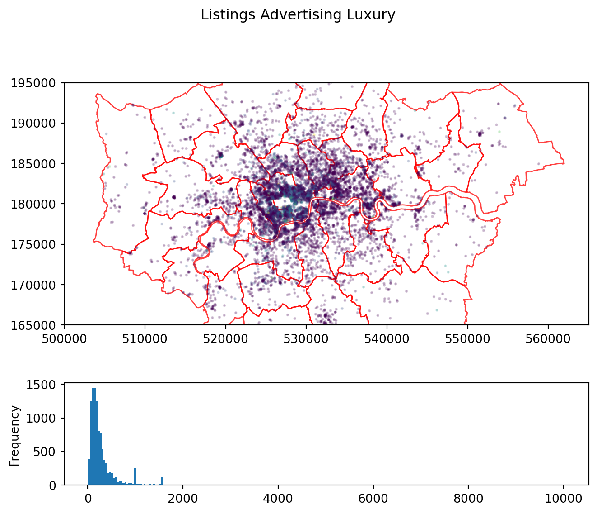
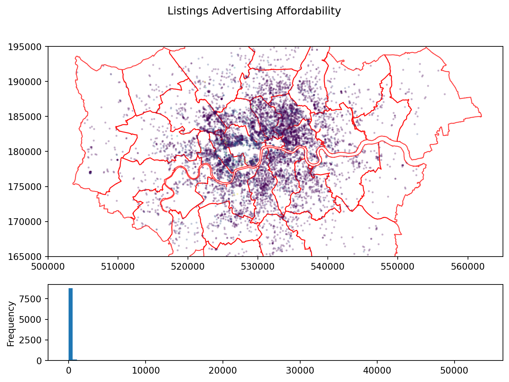
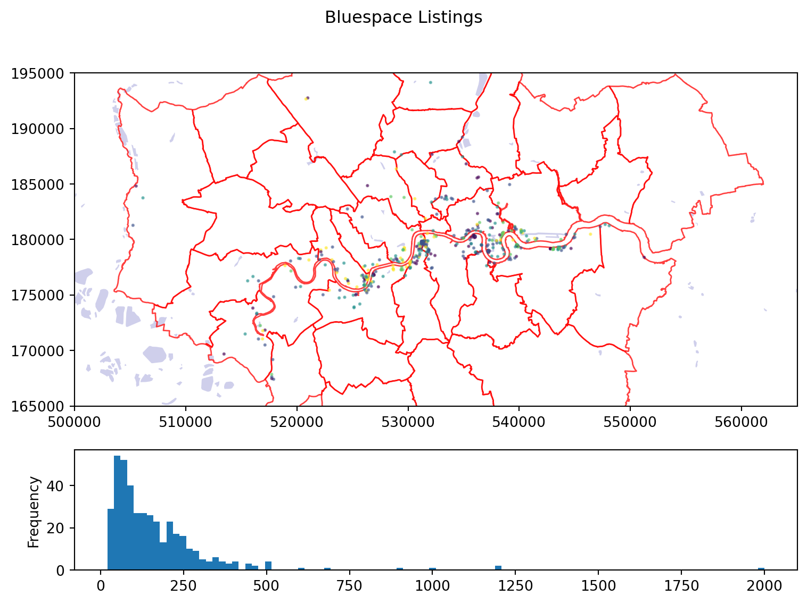
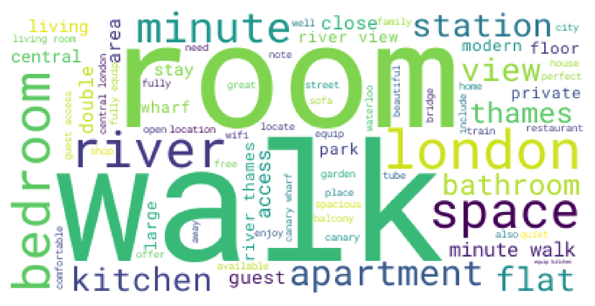
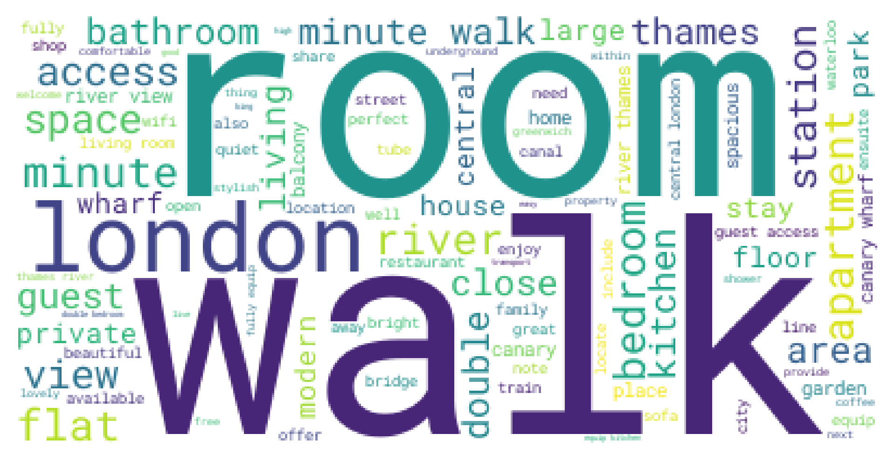
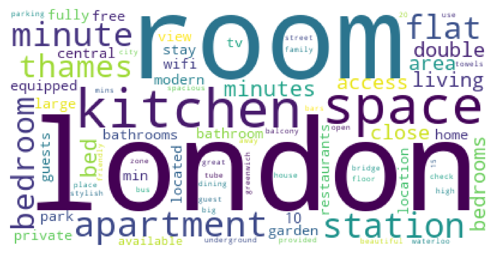

import spacy
# `...web_md` and `...web_lg` are also options
corp = "en_core_web_sm"
try:
nlp = spacy.load(corp)
except OSError:
spacy.cli.download(corp)
nlp = spacy.load(corp)Practical 7: Working with Text (Part 2)
The basics of Text Mining and NLP
| Complete | Part 1: Foundations | Part 2: Data | Part 3: Analysis | |
|---|---|---|---|---|
| 60% | ▓▓▓▓▓▓▓▓ | ▓▓▓▓▓░ | ░░░░░░ | 7/10 |
A lot of the content here is provided to help you understand what text-cleaning does and how it generates tokens that can be processed by the various analytical approaches commonly-used in NLP. The best way to think about this is as a practical in three parts, not all of which you should expect to complete in this session:
- Tasks 1–3: these are largely focussed on the basics: exploring text and using regular expressions to find and select text.
- Tasks 4–5: this might seem like a bit of a detour, but it’s intended to show you in a more tangible way how ‘normalisation’ works when we’re working with text. You should feel free to stop here and return to the rest later.
- Tasks 6–7: are about finding important vocabulary (think ‘keywords’ and ‘significant terms’) in documents so that you can start to think about what is distinctive about documents and groups of documents. This is quite useful and relatively easier to understand than what comes next!
- Tasks 8–9: are about fully-fledged NLP using Latent Direclecht Allocation (topic modelling) and Word2Vec (words embeddings for use in clustering or similarity work).
The later parts are largely complete and ready to run; however, that doesn’t mean you should just skip over them and think you’ve grasped what’s happening and it will be easy to apply in your own analyses. I would not pay as much attention to LDA topic mining since I don’t think it’s results are that good, but I’ve included it here as it’s still commonly-used in the Digital Humanities and by Marketing folks. Word2Vec is much more powerful and forms the basis of the kinds of advances seen in ChatGPT and other LLMs.
🔗 Connections
Working with text is unquestionably hard. In fact, conceptually this is probaly the most challenging practical of the term! But data scientists are always dealing with text because so much of the data that we collect (even more so thanks to the web) is not only text-based (URLs are text!) but, increasingly, unstructured (social media posts, tags, etc.). So while getting to grips with text is a challenge, it also uniquely positions you with respect to the skills and knowledge that other graduates are offering to employers.
Preamble
This practical has been written using nltk, but would be relatively easy to rework using spacy. Most programmers tend to use one or the other, and the switch wouldn’t be hard other than having to first load the requisite language models:
You can read about the models, and note that they are also available in other languages besides English.
Setup
Difficulty Level: Low
But this is only because this has been worked out for you. Starting from sctach in NLP is hard so people try to avoid it as much as possible.
Required Modules
Note
Notice that the number of modules and functions that we import is steadily increasing week-on-week, and that for text processing we tend to draw on quite a wide range of utilies! That said, the three most commonly used are: sklearn, nltk, and spacy.
Standard libraries we’ve seen before.
import os
import numpy as np
import pandas as pd
import geopandas as gpd
import re
import math
import matplotlib.pyplot as pltVectorisers we will use from the ‘big beast’ of Python machine learning: Sci-Kit Learn.
from sklearn.feature_extraction.text import TfidfVectorizer
from sklearn.feature_extraction.text import CountVectorizer
from sklearn.decomposition import LatentDirichletAllocation
# We don't use this but I point out where you *could*
from sklearn.preprocessing import OneHotEncoder NLP-specific libraries that we will use for tokenisation, lemmatisation, and frequency analysis.
import nltk
import spacy
from nltk.corpus import wordnet as wn
from nltk.stem.wordnet import WordNetLemmatizer
try:
from nltk.corpus import stopwords
except:
nltk.download('stopwords')
from nltk.corpus import stopwords
stopword_list = set(stopwords.words('english'))
from nltk.tokenize import word_tokenize, sent_tokenize
from nltk.tokenize.toktok import ToktokTokenizer
from nltk.stem.porter import PorterStemmer
from nltk.stem.snowball import SnowballStemmer
from nltk import ngrams, FreqDist
lemmatizer = WordNetLemmatizer()
tokenizer = ToktokTokenizer()Remaining libraries that we’ll use for processing and display text data. Most of this relates to dealing with the various ways that text data cleaning is hard because of the myriad formats it comes in.
import string
import unicodedata
from bs4 import BeautifulSoup
from wordcloud import WordCloud, STOPWORDSThis next is just a small utility function that allows us to output Markdown (like this cell) instead of plain text:
from IPython.display import display_markdown
def as_markdown(head='', body='Some body text'):
if head != '':
display_markdown(f"##### {head}\n\n>{body}\n", raw=True)
else:
display_markdown(f">{body}\n", raw=True)
as_markdown('Result!', "Here's my output...")Result!
Here’s my output…
Loading Data
🔗 Connections
Because I generally want each practical to stand on its own (unless I’m trying to make a point), I’ve not moved this to a separate Python file (e.g. utils.py, but in line with what we covered back in the lectures on Functions and Packages, this sort of thing is a good candidate for being split out to a separate file to simplify re-use.
Remember this function from last week? We use it to save downloading files that we already have stored locally. But notice I’ve made some small changes… what do these do to help the user?
import os
from requests import get
from urllib.parse import urlparse
def cache_data(src:str, dest:str) -> str:
"""Downloads and caches a remote file locally.
The function sits between the 'read' step of a pandas or geopandas
data frame and downloading the file from a remote location. The idea
is that it will save it locally so that you don't need to remember to
do so yourself. Subsequent re-reads of the file will return instantly
rather than downloading the entire file for a second or n-th itme.
Parameters
----------
src : str
The remote *source* for the file, any valid URL should work.
dest : str
The *destination* location to save the downloaded file.
Returns
-------
str
A string representing the local location of the file.
"""
url = urlparse(src) # We assume that this is some kind of valid URL
fn = os.path.split(url.path)[-1] # Extract the filename
dfn = os.path.join(dest,fn) # Destination filename
# Check if dest+filename does *not* exist --
# that would mean we have to download it! We
# also check for *very* small files that are
# likely to represent an incomplete download.
if not os.path.isfile(dfn) or os.stat(dfn).st_size < 250:
print(f"{dfn} not found, downloading!")
# Convert the path back into a list (without)
# the filename -- we need to check that directories
# exist first.
path = os.path.split(dest)
# Create any missing directories in dest(ination) path
# -- os.path.join is the reverse of split (as you saw above)
# but it doesn't work with lists... so I had to google how
# to use the 'splat' operator! os.makedirs creates missing
# directories in a path automatically.
if len(path) >= 1 and path[0] != '':
os.makedirs(os.path.join(*path), exist_ok=True)
# Download and write the file
with open(dfn, "wb") as file:
response = get(src)
file.write(response.content)
print("\tDone downloading...")
# What's this doing???
f_size = os.stat(dfn).st_size
print(f"\tSize is {f_size/1024**2:,.0f} MB ({f_size:,} bytes)")
else:
print(f"Found {dfn} locally!")
# And why is it here as well???
f_size = os.stat(dfn).st_size
print(f"\tSize is {f_size/1024**2:,.0f} MB ({f_size:,} bytes)")
return dfn
Tip
For very large non-geographic data sets, remember that you can use_cols (or columns depending on the file type) to specify a subset of columns to load.
Load the main data set:
# Set download URL
ymd = '2023-09-06'
host = 'https://orca.casa.ucl.ac.uk'
url = f'{host}/~jreades/data/{ymd}-listings.geoparquet'
gdf = gpd.read_parquet( cache_data(url, os.path.join('data','geo')),
columns=['geometry', 'listing_url', 'name',
'description', 'amenities', 'price'])
gdf = gdf.to_crs('epsg:27700')
print(f"gdf has {gdf.shape[0]:,} rows and CRS is {gdf.crs.name}.")Found data/geo/2023-09-06-listings.geoparquet locally!
Size is 42 MB (44,152,609 bytes)
gdf has 85,134 rows and CRS is OSGB36 / British National Grid.Load supporting Geopackages:
ddir = os.path.join('data','geo') # destination directory
spath = 'https://github.com/jreades/fsds/blob/master/data/src/' # source path
boros = gpd.read_file( cache_data(spath+'Boroughs.gpkg?raw=true', ddir) )
water = gpd.read_file( cache_data(spath+'Water.gpkg?raw=true', ddir) )
green = gpd.read_file( cache_data(spath+'Greenspace.gpkg?raw=true', ddir) )
print('Done.')Found data/geo/Boroughs.gpkg locally!
Size is 1 MB (905,216 bytes)
Found data/geo/Water.gpkg locally!
Size is 0 MB (208,896 bytes)
Found data/geo/Greenspace.gpkg locally!
Size is 1 MB (1,146,880 bytes)
Done.Exploratory Textual Analysis
🔗 Connections
If you plan to work with data post-graduation then you will need to become comfortable with Regular Expressions (aka. regexes). These are the focus of the Patterns in Text lecture but they barely even scratch the surface of what regexes can do. They are hard, but they are powerful.
Tip
In a full text-mining application I would spend a lot more time on this stage: sampling, looking at descriptions in full, performing my analysis (the rest of the steps) and then coming back with a deeper understanding of the data to make further changes to the analysis.
It’s helpful to have a sense of what data look like before trying to do something with them, but by default pandas truncates quite a lot of output to keep it from overwhelming the display. For text processing, however, you should probably change the amount of preview text provided by pandas using the available options. Note: there are lots of other options that you can tweak in pandas.
print(f"Default maximum column width: {pd.options.display.max_colwidth}") # What's this currently set to?
pd.options.display.max_colwidth=250 # None = no maximum column width (you probably don't want to leave it at this)
print(f"Now maximum column width set to: {pd.options.display.max_colwidth}")Default maximum column width: 50
Now maximum column width set to: 250The Description Field
Difficulty level: Moderate, because of the questions.
To explore the description field properly you’ll need to filter out any NA/NaN descriptions before sampling the result. Hint: you’ll need to think about negation (~) of a method output that tells you if a field is NA.
gdf[???].sample(5, random_state=42)[['description']]gdf[~gdf.description.isna()].sample(5, random_state=42)[['description']]| description | |
|---|---|
| id | |
| 21898360 | A wonderful double room in harrow on the hill.<br /><br />Very quite and secure area<br />Guests will have acces to all comunes areas in the flat, bathroom, kitchen, <br />very spacious natural garden with table and chairs to to take your breakfa... |
| 40269638 | - 3 Bedrooms 2 beds and 1 sofa bed<br />- 2 Bathroom<br />- 0.5 miles Underground Station <br />- Free WiFi <br /><br />This is an exciting opportunity to stay in a unique part of West London, Maida Hill. <br /><br />This stunning 3-bedroom apart... |
| 610813289456549376 | St George Wharf is a landmark riverside development spanning across 7 acres of London’s newest area of regeneration. It is distinguishable by its striking gull-wing roofs and stylish terraces. Broadway Malyan Architects championed innovation by d... |
| 917365608608238592 | My place is in the Heart of London. It is only 15 mins to KINGS CROSS Underground station, 16 mins to EUROSTAR- St PANCRAS INT, and 2 mins to Angel Station by WALKING. If you choose my place you are in all the LONDON attractions, tourist amenitie... |
| 6319621 | This artsy and cozy small 1 bedroom split level flat is 4 min. from Seven Sisters tube/metro station, and close to Tottenham Hale station (ideal if you are arriving from Stansted Airport). It's in an upcoming multicultural area of London at beg... |
Stop
What do you notice about the above? Are they simple text? Are there patterns of problems? Are there characters that represent things other than words and simple punctuation?
Questions
- What patterns can you see that might need ‘dealing with’ for text-mining to work?
- What non-text characters can you see? (Things other than A-Z, a-z, and simple punctuation!)
The Amenities Field
Difficulty level: Moderate, because of the questions.
This field presents a subtle issue that might not be obvious here:
gdf.amenities.sample(5, random_state=42)id
23851484 ["Heating", "Washer", "Wifi", "Kitchen", "Dryer", "Hangers", "Essentials"]
930201284366445056 ["Bathtub", "Hot water kettle", "Shampoo", "Luggage dropoff allowed", "Portable heater", "Microwave", "Bed linens", "Blender", "Cleaning available during stay", "Coffee", "Hot water", "Iron", "Host greets you", "Clothing storage: closet, wardrobe...
19955089 ["Shampoo", "Dryer", "Microwave", "Coffee maker", "Hot water", "Iron", "First aid kit", "Washer", "Fire extinguisher", "Cooking basics", "Heating", "Dishwasher", "Oven", "Refrigerator", "TV", "Hair dryer", "Essentials", "Private entrance", "Stove...
886165743387675008 ["Lock on bedroom door", "Wifi", "Free parking on premises", "Kitchen", "Washer"]
13921898 ["Bathtub", "Indoor fireplace", "Shampoo", "Microwave", "Bed linens", "Hot water", "Iron", "Host greets you", "Free dryer \u2013 In building", "First aid kit", "Paid parking off premises", "Washer", "Bread maker", "Fire extinguisher", "Cooking ba...
Name: amenities, dtype: objectBut look what happens now, can you see the issue a little more easily?
gdf.amenities.iloc[0]'["Heating", "TV with standard cable", "Wifi", "Smoke alarm", "Dryer", "Kitchen", "Washer", "Essentials"]'Questions
- What’s the implicit format of the Amenities columns?
- How could you represent the data contained in the column?
Remove NaN Values
Note
I would be wary of doing the below in a ‘proper’ application without doing some careful research first, but to make our lives easier, we’re going to drop rows where one of these values is NaN now so it will simplify the steps below. In reality, I would spend quite a bit more time investigating which values are NaN and why before simply dropping them.
Anyway, drop all rows where either the description or amenities (or both) are NA:
gdf = gdf.dropna(???)
print(f"Now gdf has {gdf.shape[0]:,} rows.")gdf = gdf.dropna(subset=['description','amenities'])
print(f"Now gdf has {gdf.shape[0]:,} rows.")Now gdf has 84,273 rows.You should get that there are 84,273 rows.
Using Regular Expressions
🔗 Connections
We’re building on the work done in Practical 6, but making use now of the lecture on Patterns in Text) to quickly sort through the listings.
There is a lot that can be done with Regular Expressions to identify relevant records in textual data and we’re going to use this as a starting point for the rest of the analysis. I would normally consider the regexes here a ‘first pass’ at the data, but would look very carefully at the output of the TF/IDF vectorizer, Count vectorizer, and LDA to see if I could improve my regexes for further cycles of analysis… the main gain there is that regexes are much faster than using the full NLP (Natural Language Processing) pipeline on the full data set each time. As an alternative, you could develop the pipeline using a random subsample of the data and then process the remaining records sequentially – in this context there is no justification for doing that, but with a larger corpus it might make sense.
Luxury Listings
Difficulty level: Hard, because of the regular expression and questions.
I would like you to find listings that might (on the basis of word choice) indicate ‘luxury’ accommodation.
Create the Regular Expression
You should start with variations on ‘luxury’ (i.e. luxurious, luxuriate, …) and work out a single regular expression that works for variations on this one word. Later, I would encourage you to come back to this and consider what other words might help to signal ‘luxury’… perhaps words like ‘stunning’ or ‘prestigious’? Could you add those to the regex as well?
Hints: this is a toughy, but…
- All regular expressions work best using the
r'...'(which means raw string) syntax. - You need to be able to group terms. Recall, however, that in Python a ‘group’ of the form
r'(some text)'refers to matching (some textwill be ‘memoized’/remembered), whereas what you need here is a “non-capturing group” of the positive lookahead type. That’s a Google clue right there, but you’ve also seen this in the lecture.
In fact, in my real-world applications you might even need more than one group/non-capturing group in a nested structure.
gdf[
gdf.description.str.contains(r'???', regex=True, flags=re.IGNORECASE) # <-- The regex
].sample(5, random_state=42)[['description']]gdf[
gdf.description.str.contains(r'(?:luxur(?:y|ious|iat)|prestigious|stunning)', regex=True, flags=re.IGNORECASE)
].sample(5, random_state=42)[['description']]| description | |
|---|---|
| id | |
| 21052595 | NEW 4 BEDROOM HOUSE WITH PRIVATE GARDEN IN WEST HAMPSTEAD, LONDON NW6<br /><br />Stunning high spec house overall 3 levels. <br /><br />Ground floor: Kitchen - Fully equipped with modern appliances. Living area - sofa, TV, dining table and chairs... |
| 3798279 | Beautiful home in Kingston upon Thames. Central location - short walk to the river & kingston town centre & kingston train station (35 mins to London). Bus ride to Hampton Court and Richmond.<br /><br /><b>The space</b><br />Three bedroom home ... |
| 821457432530779648 | Stunning spacious one bedroom apartment in one of London's most prime locations. You are a mere minutes away from Holborn station and British museum is right behind the building. Covent Gargen, a shopping and entertainment hub boasting some of th... |
| 859336290217358976 | Well thought out townhouse on a pedestrianised Avenue for families/groups of friends wanting lots of space in a fantastic location super close to Clapham Junction station and Northcote Road.<br /><br />Secure underground parking available to pre... |
| 959952321493154432 | Perfectly located in Knightsbridge, convenient to most hot spots. This chic home will have you surrounded by the most iconic London sights when you're out and about in the neighborhood, and steeped in Scandinavian culture when you're relaxing in ... |
Apply it to Select Data
Assign it to a new data frame called lux:
lux = gdf[gdf.description.str.contains(r'???', regex=True, flags=re.IGNORECASE)].copy()
print(f"Found {lux.shape[0]:,} records for 'luxury' flats")lux = gdf[gdf.description.str.contains(r'(?:luxur(?:y|ious|iat)|prestigious|stunning)', regex=True, flags=re.IGNORECASE)].copy()
print(f"Found {lux.shape[0]:,} records for 'luxury' flats")Found 10,368 records for 'luxury' flatsYou should get 10,368 rows.
Plot the Data
Now we are going to create a more complex plot that will give space to both the spatial and price distributions using subplot2grid.
help(plt.subplot2grid)Notice that there are two ways to create the plot specified above. I chose route 1, but in some ways route 2 (where you specify a gridspec object and then add the axes might be a bit simpler to work out if you’re starting from scratch.
The critical thing here is to understand how we’er initialising a plot that has 4 rows and 1 column even though it is only showing 2 plots. What we’re going to do is set the first plot to span 3 rows so that it takes up 75% of the plot area (3/4), while the second plot only takes up 25% (1/4). They will appear one above the other, so there’s only 1 column. Here’s how to read the key parts of subplot2grid:
nrows– how many rows of plots in the figure.ncols– how many columns of plots in the figure.row– what row of the figure does this plot start on (0-indexed like a list in Python).col– what column of the figure does this plot start on (0-indexed like a list in Python).rowspan– how many rows of the figure does this plot span (not 0-indexed because it’s not list-like).colspan– how many columns of the figure does this plot span (not 0-indexed because it’s not list-like).
Every time you call subplot2grid you are initialising a new axis-object into which you can then draw with your geopackage or pandas plotting methods.
f,ax = plt.subplots(1,1,figsize=(9,6))
ax.remove()
# The first plot
ax1 = plt.subplot2grid((4, 1), (???), rowspan=???)
boros.plot(edgecolor='red', facecolor='none', linewidth=1, alpha=0.75, ax=ax1)
lux.plot(markersize=2, column='price', cmap='viridis', alpha=0.2, scheme='Fisher_Jenks_Sampled', ax=ax1)
ax1.set_xlim([500000, 565000])
ax1.set_ylim([165000, 195000]);
# The second plot
ax2 = plt.subplot2grid((???), (???), rowspan=1)
lux.price.plot.hist(bins=250, ax=ax2)
plt.suptitle("Listings Advertising Luxury") # <-- How does this differ from title? Change it and see!
plt.tight_layout() # <-- Try creating the plot *without* this to see what it changes
plt.show()f,ax = plt.subplots(1,1,figsize=(7,6))
ax.remove()
# The first plot
ax1 = plt.subplot2grid((4, 1), (0, 0), rowspan=3)
boros.plot(edgecolor='red', facecolor='none', linewidth=1, alpha=0.75, ax=ax1)
lux.plot(markersize=2, column='price', cmap='viridis', alpha=0.2, scheme='Fisher_Jenks_Sampled', ax=ax1)
ax1.set_xlim([500000, 565000])
ax1.set_ylim([165000, 195000]);
# The second plot
ax2 = plt.subplot2grid((4, 1), (3, 0), rowspan=1)
lux.price.plot.hist(bins=250, ax=ax2)
plt.suptitle("Listings Advertising Luxury") # <-- How does this differ from title? Change it and see!
plt.tight_layout() # <-- Try creating the plot *without* this to see what it changes
Your result should look similar to:
Questions
- What does
suptitledo and how is it different fromtitle? Could you use this as part of your plot-making process? - What does
tight_layoutdo?
Budget Listings
Difficulty level: Easy, because you’ve worked out the hard bits already.
Create the Regular Expression
What words can you think of that might help you to spot affordable and budget accommodation? Start with just a couple of words and then I would encourage you to consider what other words might help to signal ‘affordability’… perhaps words like ‘cosy’ or ‘charming’ and then think about how you could you add those to the regex?
Hints: this just builds on what you did above with one exception:
- I’d try adding word boundary markers to the regex (
\b) where appropriate…
gdf[
gdf.description.str.contains(???, regex=True, flags=re.IGNORECASE)
].sample(5, random_state=42)[['description']]gdf[
gdf.description.str.contains(r'\b(?:affordable|budget|cheap|cosy)\b',
regex=True, flags=re.IGNORECASE)
].sample(5, random_state=42)[['description']]| description | |
|---|---|
| id | |
| 10466073 | This is a charming little flat in crouch end, North London. It is located 10min from crouch end "village" which is packed with coffee shops, nice restaurants, shops etc... It is on a very quiet street and easy access to central London.<br /><br /... |
| 679538210387434496 | This trendy and spacious 3 bed house in Bow, is ideal for people who want to experience London but without all the hustle and bustle.<br /><br />It is situated in a peaceful area, where the vast open space of Victoria Park is within easy reach an... |
| 7560171 | The spacious house offers double bedroom with ensuit bathroom, a large kitchen and cosy living room.<br />This luxurious and modern apartment is located 3 mins walking from London Bridge station; walking distance from many of Londons attractions<... |
| 721518857445429120 | Kick back and relax in this calm, stylish one-bedroom, ground-floor flat in Leyton Village. There’s a contemporary kitchen and cosy living room with a sofa bed. The location puts you between Leyton and Leytonstone tube stations in a quiet street ... |
| 731014319309725184 | Beautiful 1 bedroom apartment in the heart of Peckham, only 10 minutes walk away from Peckham Rye station with direct trains to London Victoria (15mins), London Bridge (10mins) and Clapham Junction (16mins) - bringing the whole of London to your ... |
Apply it to Select Data
aff = gdf[gdf.description.str.contains(???, regex=True, flags=re.IGNORECASE)].copy()
print(f"There are {aff.shape[0]:,} rows flagged as 'affordable'.")aff = gdf[gdf.description.str.contains(r'\b(?:affordable|budget|cheap|cosy)\b',
regex=True, flags=re.IGNORECASE)].copy()
print(f"There are {aff.shape[0]:,} rows flagged as 'affordable'.")There are 8,937 rows flagged as 'affordable'.You should get {python} f"{aff.shape[0]:,}" rows.
Plot the Data
f,ax = plt.subplots(1,1,figsize=(8,6))
ax.remove()
# The first plot
ax1 = plt.subplot2grid((4, 1), (0, 0), rowspan=3)
boros.plot(edgecolor='red', facecolor='none', linewidth=1, alpha=0.75, ax=ax1)
aff.plot(markersize=2, column='price', cmap='viridis', alpha=0.2, scheme='Fisher_Jenks_Sampled', ax=ax1)
ax1.set_xlim([500000, 565000])
ax1.set_ylim([165000, 195000]);
# The second plot
ax2 = plt.subplot2grid((4, 1), (3, 0), rowspan=1)
aff.price.plot.hist(bins=100, ax=ax2)
plt.suptitle("Listings Advertising Affordability")
plt.tight_layout()
#plt.savefig("Affordable_Listings.png", dpi=150)
Questions
- Do you think that this is a good way to select affordable options?
- Do you understand what
dpimeans and howsavefigworks? - Copy the code from above but modify it to constrain the histogram on a more limited distribution by filtering out the outliers before drawing the plot. I would copy the cell above to one just below here so that you keep a working copy available and can undo any changes that break things.
Near Bluespace
Difficulty level: Medium, because you’re still learning about regexes.
Now see if you can work out a regular expression to find accommodation that emphasises accessibility to the Thames and other ‘blue spaces’ as part of the description? One thing you’ll need to tackle is that some listings seem to say something about Thameslink and you wouldn’t want those be returned as part of a regex looking for rivers. So by way of a hint:
- You probably need to think about the Thames, rivers, and water.
- These will probably be followed by a qualifier like a ‘view’ (e.g. Thames-view) or a front (e.g. water-front).
- But you need to rule out things like “close the Thameslink station…”
Create the regular Expression
gdf[
gdf.description.str.contains(???, regex=???, flags=???)
].sample(5, random_state=42)[['description']]gdf[
gdf.description.str.contains(r'(?:Thames|river|water|canals?)(?:-|\s+)(?: view|\s?front)\b',
regex=True, flags=re.IGNORECASE)
].sample(5, random_state=42)[['description']]| description | |
|---|---|
| id | |
| 906924808902274560 | Brand new ultra spacious apartment just one minute walk from the Excel center and with great connections to anywhere in London.<br />The area is full with cafés, supermarkets and restaurants just at your door step with lots of fun things to do li... |
| 600645213392859136 | Are you a woman?<br />We offer a warm and friendly, Home from home, welcome to women travellers in our, peaceful and centrally located home.<br /><br /> Excellent location in Zone1, with river ferry, trains, tube, and buses within a 5 minute wal... |
| 868117243960619264 | Just across the street from water front, near shadwell basin. View of Canary Wharf and the Shard on the big balcony<br /><br />7mins to shadwell overground and DLR. just 1 stop from Bank, Tower Bridge/Tower Hill, White Chapel (which connects to E... |
| 722937027420061056 | There’s no better way to experience the beauty of London City than by sleeping right in the heart of it. This Ensuite is within a 2-bed property. Ideally located at the river front to enjoy the mesmerising view of Canary Wharf.<br /><br />Within ... |
| 26748596 | Welcome to Sunbury Lane in Battersea :)<br /><br />My house is just off the river front allowing a large, safe space from which to explore the best of South London whilst also having a bus that runs you from our road into central in just 15 minut... |
Apply it to the Select Data
bluesp = gdf[
(gdf.description.str.contains(???, regex=True, flags=re.IGNORECASE)) |
(gdf.description.str.contains(???, regex=True, flags=re.IGNORECASE))
].copy()
print(f"Found {bluesp.shape[0]:,} rows.")bluesp = gdf[
(gdf.description.str.contains(r'(?:Thames|river|water|canals?)(?:-|\s+)(?:view|front)\b', regex=True, flags=re.IGNORECASE)) |
(gdf.description.str.contains(r'(?:walk|close|near) to (?:Thames|river|water|canal)', regex=True, flags=re.IGNORECASE))
].copy()
print(f"Found {bluesp.shape[0]:,} rows.")Found 408 rows.You should get {python} f"{bluesp.shape[0]:,}" rows.
Plot the Data
f,ax = plt.subplots(1,1,figsize=(8,6))
ax.remove()
# The first plot
ax1 = plt.subplot2grid((4, 1), (0, 0), rowspan=3)
water.plot(edgecolor='none', facecolor=(.25, .25, .7, .25), ax=ax1)
boros.plot(edgecolor='red', facecolor='none', linewidth=1, alpha=0.75, ax=ax1)
bluesp.plot(markersize=2, column='price', cmap='viridis', alpha=0.5, scheme='Fisher_Jenks_Sampled', ax=ax1)
ax1.set_xlim([500000, 565000])
ax1.set_ylim([165000, 195000]);
# The second plot
ax2 = plt.subplot2grid((4, 1), (3, 0), rowspan=1)
bluesp.price.plot.hist(bins=100, ax=ax2)
plt.suptitle("Bluespace Listings")
plt.tight_layout()
plt.show()
Questions
- How else might you select listings with a view of the Thames or other bluespaces?
Illustrative Text Cleaning
Now we’re going to step through the parts of the process that we apply to clean and transform text. We’ll do this individually before using a function to apply them all at once.
Downloading a Web Page
Difficulty Level: Low.
There is plenty of good economic geography research being done using web pages. Try using Google Scholar to look for work using the British Library’s copy of the Internet Archive.
from urllib.request import urlopen, Request
# We need this so that the Bartlett web site 'knows'
# what kind of browser it is deasling with. Otherwise
# you get a Permission Error (403 Forbidden) because
# the site doesn't know what to do.
hdrs = {
'User-Agent': 'Mozilla/5.0 (X11; Linux x86_64) AppleWebKit/537.11 (KHTML, like Gecko) Chrome/23.0.1271.64 Safari/537.11',
'Accept': 'text/html,application/xhtml+xml,application/xml;q=0.9,*/*;q=0.8',
}
url = 'https://www.ucl.ac.uk/bartlett/casa/about-0'# Notice that here we have to assemble a request and
# then 'open' it so that the request is properly issued
# to the web server. Normally, we'd just use `urlopen`,
# but that doesn't give you the ability to set the headers.
request = Request(url, None, hdrs) #The assembled request
response = urlopen(request)
html = response.???.decode('utf-8') # The data you need
print(html[:1000])# Notice that here we have to assemble a request and
# then 'open' it so that the request is properly issued
# to the web server. Normally, we'd just use `urlopen`,
# but that doesn't give you the ability to set the headers.
request = Request(url, None, hdrs) #The assembled request
response = urlopen(request)
html = response.read().decode('utf-8') # The data you need
print(html[:1000])<!DOCTYPE html>
<!--[if IE 7]>
<html lang="en" class="lt-ie9 lt-ie8 no-js"> <![endif]-->
<!--[if IE 8]>
<html lang="en" class="lt-ie9 no-js"> <![endif]-->
<!--[if gt IE 8]><!-->
<html lang="en" class="no-js"> <!--<![endif]-->
<head>
<meta name="viewport" content="width=device-width, initial-scale=1.0"/>
<meta name="author" content="UCL"/>
<meta property="og:profile_id" content="uclofficial"/>
<meta http-equiv="Content-Type" content="text/html; charset=utf-8" />
<link rel="shortcut icon" href="https://www.ucl.ac.uk/bartlett/casa/sites/all/themes/indigo/favicon.ico" type="image/vnd.microsoft.icon" />
<meta name="description" content="The Centre for Advanced Spatial Analysis (CASA) is an interdisciplinary research institute focusing on the science of cities within The Bartlett Faculty of the Built Environment at UCL." />
<link rel="canonical" href="https://www.ucl.ac.uk/bartlett/casa/about-0" />
<meta name="ucl:faculty" content="Bartlett" />
<meta name="ucl:org_unit" content="CentRemoving HTML
Difficulty level: Moderate
Because what we’re doing will seem really strange and uses some previously unseen libraries that you’ll have to google.
Hint: you need to need to get the text out of the each returned <p> and <div> element! I’d suggest also commenting this up since there is a lot going on on some of these lines of code!
cleaned = []
soup = BeautifulSoup(html)
body = soup.find('body')
for c in body.findChildren(recursive=False):
if c.name in ['div','p'] and c.???.strip() != '':
# \xa0 is a non-breaking space in Unicode ( in HTML)
txt = [re.sub(r'(?:\u202f|\xa0|\u200b)',' ',x.strip()) for x in c.get_text(separator=" ").split('\n') if x.strip() != '']
cleaned += txt
cleanedcleaned = []
soup = BeautifulSoup(html)
body = soup.find('body')
for c in body.findChildren(recursive=False):
if c.name in ['div','p'] and c.get_text().strip() != '':
# \xa0 is a non-breaking space in Unicode ( in HTML)
txt = [re.sub(r'(?:\u202f|\xa0|\u200b)',' ',x.strip()) for x in c.get_text(separator=" ").split('\n') if x.strip() != '']
cleaned += txt
cleaned['UCL Home The Bartlett Centre for Advanced Spatial Analysis About',
'About',
'The Centre for Advanced Spatial Analysis (CASA) is an interdisciplinary research institute focusing on the science of cities within The Bartlett Faculty of the Built Environment at UCL.',
'The Centre for Advanced Spatial Analysis (CASA) was established in 1995 to lead the development of a science of cities drawing upon methods and ideas in modelling and data science, sensing the urban environment, visualisation and computation. Today, CASA’s research is still pushing boundaries to create better cities for everyone, both leading the intellectual agenda and working closely with government and industry partners to make real-world impact. Our teaching reflects this, making the most of our cutting-edge research, tools, new forms of data, and long-standing non-academic partnerships to train the next generation of urban scientists with the skills and ideas they’ll need to have an impact in industry, government, academia, and the third sector. The CASA community is closely connected, but strongly interdisciplinary. We bring together people from around the world with a unique variety of backgrounds – including physicists, planners, geographers, economists, data scientists, architects, mathematicians and computer scientists – united by our mission to tackle the biggest challenges facing cities and societies around the world. We work across multiple scales: from the hyper-local environment of the low-powered sensor all the way up to satellite remote sensing of whole countries and regions. Studying at CASA brings lifelong value, with our students poised to take on leadership and integration roles at the forefront of urban and spatial data science. By studying with us you will become part of our active and engaged alumni community, with access to job listings, networking and social activities, as well as continued contact with our outstanding teachers and researchers. Location The UCL Centre for Advanced Spatial Analysis is located at 90 Tottenham Court Road, London, W1T 4TJ.',
'View Map',
'Contact Address: UCL Centre for Advanced Spatial Analysis First Floor, 90 Tottenham Court Road London W1T 4TJ Telephone: +44 (0)20 3108 3877 Email: casa@ucl.ac.uk',
'Tweets by CASAUCL']Lower Case
Difficulty Level: Low.
lower = [c.???() for ??? in cleaned]
lowerlower = [s.lower() for s in cleaned]
lower['ucl home the bartlett centre for advanced spatial analysis about',
'about',
'the centre for advanced spatial analysis (casa) is an interdisciplinary research institute focusing on the science of cities within the bartlett faculty of the built environment at ucl.',
'the centre for advanced spatial analysis (casa) was established in 1995 to lead the development of a science of cities drawing upon methods and ideas in modelling and data science, sensing the urban environment, visualisation and computation. today, casa’s research is still pushing boundaries to create better cities for everyone, both leading the intellectual agenda and working closely with government and industry partners to make real-world impact. our teaching reflects this, making the most of our cutting-edge research, tools, new forms of data, and long-standing non-academic partnerships to train the next generation of urban scientists with the skills and ideas they’ll need to have an impact in industry, government, academia, and the third sector. the casa community is closely connected, but strongly interdisciplinary. we bring together people from around the world with a unique variety of backgrounds – including physicists, planners, geographers, economists, data scientists, architects, mathematicians and computer scientists – united by our mission to tackle the biggest challenges facing cities and societies around the world. we work across multiple scales: from the hyper-local environment of the low-powered sensor all the way up to satellite remote sensing of whole countries and regions. studying at casa brings lifelong value, with our students poised to take on leadership and integration roles at the forefront of urban and spatial data science. by studying with us you will become part of our active and engaged alumni community, with access to job listings, networking and social activities, as well as continued contact with our outstanding teachers and researchers. location the ucl centre for advanced spatial analysis is located at 90 tottenham court road, london, w1t 4tj.',
'view map',
'contact address: ucl centre for advanced spatial analysis first floor, 90 tottenham court road london w1t 4tj telephone: +44 (0)20 3108 3877 email: casa@ucl.ac.uk',
'tweets by casaucl']Stripping ‘Punctuation’
Difficulty level: Hard
This is because you need to understand: 1) why we’re compiling the regular expression and how to use character classes; and 2) how the NLTK tokenizer differs in approach to the regex.
Regular Expression Approach
We want to clear out punctuation using a regex that takes advantage of the [...] (character class) syntax. The really tricky part is remembering how to specify the ‘punctuation’ when some of that punctuation has ‘special’ meanings in a regular expression context. For instance, . means ‘any character’, while [ and ] mean ‘character class’. So this is another escaping problem and it works the same way it did when we were dealing with the Terminal…
Hints: some other factors…
- You will want to match more than one piece of punctuation at a time, so I’d suggest add a
+to your pattern. - You will need to look into metacharacters for creating a kind of ‘any of the characters in this class’ bag of possible matches.
pattern = re.compile(r'[???]+')
print(pattern)pattern = re.compile(r'[,\.!\-><=\(\)\[\]\/&\'\"’;\+\–\—]+')
print(pattern)re.compile('[,\\.!\\-><=\\(\\)\\[\\]\\/&\\\'\\"’;\\+\\–\\—]+')Tokenizer
The other way to do this, which is probably easier but produces more complex output, is to draw on the tokenizers already provided by NLTK. For our purposes word_tokenize is probably fine, but depending on your needs there are other options and you can also write your own.
nltk.download('punkt')
nltk.download('wordnet')
from nltk.tokenize import word_tokenize
print(word_tokenize)<function word_tokenize at 0x3112ee160>[nltk_data] Downloading package punkt to /Users/jreades/nltk_data...
[nltk_data] Package punkt is already up-to-date!
[nltk_data] Downloading package wordnet to /Users/jreades/nltk_data...
[nltk_data] Package wordnet is already up-to-date!Compare
Look at how these outputs differ in subtle ways:
subbed = []
tokens = []
for l in lower:
subbed.append(re.sub(pattern, ' ', l))
tokens.append(word_tokenize(l))
for s in subbed:
as_markdown("Substituted", s)
for t in tokens:
as_markdown("Tokenised", t)Substituted
ucl home the bartlett centre for advanced spatial analysis about
Substituted
about
Substituted
the centre for advanced spatial analysis casa is an interdisciplinary research institute focusing on the science of cities within the bartlett faculty of the built environment at ucl
Substituted
the centre for advanced spatial analysis casa was established in 1995 to lead the development of a science of cities drawing upon methods and ideas in modelling and data science sensing the urban environment visualisation and computation today casa s research is still pushing boundaries to create better cities for everyone both leading the intellectual agenda and working closely with government and industry partners to make real world impact our teaching reflects this making the most of our cutting edge research tools new forms of data and long standing non academic partnerships to train the next generation of urban scientists with the skills and ideas they ll need to have an impact in industry government academia and the third sector the casa community is closely connected but strongly interdisciplinary we bring together people from around the world with a unique variety of backgrounds including physicists planners geographers economists data scientists architects mathematicians and computer scientists united by our mission to tackle the biggest challenges facing cities and societies around the world we work across multiple scales: from the hyper local environment of the low powered sensor all the way up to satellite remote sensing of whole countries and regions studying at casa brings lifelong value with our students poised to take on leadership and integration roles at the forefront of urban and spatial data science by studying with us you will become part of our active and engaged alumni community with access to job listings networking and social activities as well as continued contact with our outstanding teachers and researchers location the ucl centre for advanced spatial analysis is located at 90 tottenham court road london w1t 4tj
Substituted
view map
Substituted
contact address: ucl centre for advanced spatial analysis first floor 90 tottenham court road london w1t 4tj telephone: 44 0 20 3108 3877 email: casa@ucl ac uk
Substituted
tweets by casaucl
Tokenised
[‘ucl’, ‘home’, ‘the’, ‘bartlett’, ‘centre’, ‘for’, ‘advanced’, ‘spatial’, ‘analysis’, ‘about’]
Tokenised
[‘about’]
Tokenised
[‘the’, ‘centre’, ‘for’, ‘advanced’, ‘spatial’, ‘analysis’, ‘(’, ‘casa’, ‘)’, ‘is’, ‘an’, ‘interdisciplinary’, ‘research’, ‘institute’, ‘focusing’, ‘on’, ‘the’, ‘science’, ‘of’, ‘cities’, ‘within’, ‘the’, ‘bartlett’, ‘faculty’, ‘of’, ‘the’, ‘built’, ‘environment’, ‘at’, ‘ucl’, ‘.’]
Tokenised
[‘the’, ‘centre’, ‘for’, ‘advanced’, ‘spatial’, ‘analysis’, ‘(’, ‘casa’, ‘)’, ‘was’, ‘established’, ‘in’, ‘1995’, ‘to’, ‘lead’, ‘the’, ‘development’, ‘of’, ‘a’, ‘science’, ‘of’, ‘cities’, ‘drawing’, ‘upon’, ‘methods’, ‘and’, ‘ideas’, ‘in’, ‘modelling’, ‘and’, ‘data’, ‘science’, ‘,’, ‘sensing’, ‘the’, ‘urban’, ‘environment’, ‘,’, ‘visualisation’, ‘and’, ‘computation’, ‘.’, ‘today’, ‘,’, ‘casa’, ’’‘, ’s’, ‘research’, ‘is’, ‘still’, ‘pushing’, ‘boundaries’, ‘to’, ‘create’, ‘better’, ‘cities’, ‘for’, ‘everyone’, ‘,’, ‘both’, ‘leading’, ‘the’, ‘intellectual’, ‘agenda’, ‘and’, ‘working’, ‘closely’, ‘with’, ‘government’, ‘and’, ‘industry’, ‘partners’, ‘to’, ‘make’, ‘real-world’, ‘impact’, ‘.’, ‘our’, ‘teaching’, ‘reflects’, ‘this’, ‘,’, ‘making’, ‘the’, ‘most’, ‘of’, ‘our’, ‘cutting-edge’, ‘research’, ‘,’, ‘tools’, ‘,’, ‘new’, ‘forms’, ‘of’, ‘data’, ‘,’, ‘and’, ‘long-standing’, ‘non-academic’, ‘partnerships’, ‘to’, ‘train’, ‘the’, ‘next’, ‘generation’, ‘of’, ‘urban’, ‘scientists’, ‘with’, ‘the’, ‘skills’, ‘and’, ‘ideas’, ‘they’, ’’‘, ’ll’, ‘need’, ‘to’, ‘have’, ‘an’, ‘impact’, ‘in’, ‘industry’, ‘,’, ‘government’, ‘,’, ‘academia’, ‘,’, ‘and’, ‘the’, ‘third’, ‘sector’, ‘.’, ‘the’, ‘casa’, ‘community’, ‘is’, ‘closely’, ‘connected’, ‘,’, ‘but’, ‘strongly’, ‘interdisciplinary’, ‘.’, ‘we’, ‘bring’, ‘together’, ‘people’, ‘from’, ‘around’, ‘the’, ‘world’, ‘with’, ‘a’, ‘unique’, ‘variety’, ‘of’, ‘backgrounds’, ‘–’, ‘including’, ‘physicists’, ‘,’, ‘planners’, ‘,’, ‘geographers’, ‘,’, ‘economists’, ‘,’, ‘data’, ‘scientists’, ‘,’, ‘architects’, ‘,’, ‘mathematicians’, ‘and’, ‘computer’, ‘scientists’, ‘–’, ‘united’, ‘by’, ‘our’, ‘mission’, ‘to’, ‘tackle’, ‘the’, ‘biggest’, ‘challenges’, ‘facing’, ‘cities’, ‘and’, ‘societies’, ‘around’, ‘the’, ‘world’, ‘.’, ‘we’, ‘work’, ‘across’, ‘multiple’, ‘scales’, ‘:’, ‘from’, ‘the’, ‘hyper-local’, ‘environment’, ‘of’, ‘the’, ‘low-powered’, ‘sensor’, ‘all’, ‘the’, ‘way’, ‘up’, ‘to’, ‘satellite’, ‘remote’, ‘sensing’, ‘of’, ‘whole’, ‘countries’, ‘and’, ‘regions’, ‘.’, ‘studying’, ‘at’, ‘casa’, ‘brings’, ‘lifelong’, ‘value’, ‘,’, ‘with’, ‘our’, ‘students’, ‘poised’, ‘to’, ‘take’, ‘on’, ‘leadership’, ‘and’, ‘integration’, ‘roles’, ‘at’, ‘the’, ‘forefront’, ‘of’, ‘urban’, ‘and’, ‘spatial’, ‘data’, ‘science’, ‘.’, ‘by’, ‘studying’, ‘with’, ‘us’, ‘you’, ‘will’, ‘become’, ‘part’, ‘of’, ‘our’, ‘active’, ‘and’, ‘engaged’, ‘alumni’, ‘community’, ‘,’, ‘with’, ‘access’, ‘to’, ‘job’, ‘listings’, ‘,’, ‘networking’, ‘and’, ‘social’, ‘activities’, ‘,’, ‘as’, ‘well’, ‘as’, ‘continued’, ‘contact’, ‘with’, ‘our’, ‘outstanding’, ‘teachers’, ‘and’, ‘researchers’, ‘.’, ‘location’, ‘the’, ‘ucl’, ‘centre’, ‘for’, ‘advanced’, ‘spatial’, ‘analysis’, ‘is’, ‘located’, ‘at’, ‘90’, ‘tottenham’, ‘court’, ‘road’, ‘,’, ‘london’, ‘,’, ‘w1t’, ‘4tj’, ‘.’]
Tokenised
[‘view’, ‘map’]
Tokenised
[‘contact’, ‘address’, ‘:’, ‘ucl’, ‘centre’, ‘for’, ‘advanced’, ‘spatial’, ‘analysis’, ‘first’, ‘floor’, ‘,’, ‘90’, ‘tottenham’, ‘court’, ‘road’, ‘london’, ‘w1t’, ‘4tj’, ‘telephone’, ‘:’, ‘+44’, ‘(’, ‘0’, ‘)’, ‘20’, ‘3108’, ‘3877’, ‘email’, ‘:’, ‘casa’, ‘@’, ‘ucl.ac.uk’]
Tokenised
[‘tweets’, ‘by’, ‘casaucl’]
Stopword Removal
Difficulty Level: Moderate
You need to remember how list comprehensions work to use the stopword_list.
stopword_list = set(stopwords.words('english'))
print(stopword_list){'our', 'before', 'does', 't', 'was', 'not', 'or', 'himself', 'more', 'i', 'y', 'has', 'wouldn', 'themselves', 'each', "you'll", 'such', "needn't", 'and', 'then', 'as', 'o', 'over', 'is', 'did', 'up', 'be', 'me', 'were', "you'd", "haven't", "wouldn't", 'them', 'about', 'down', "mustn't", 'do', 'hasn', 'mustn', 'can', 'those', 'again', 'it', 'if', 'they', "hadn't", "wasn't", 'few', 'so', 'an', 'should', 'myself', 'here', 'very', 'the', 'until', 'why', 'you', 'ma', 'been', 'mightn', 'than', 'yourself', 'all', 'at', 'no', 'of', 'into', 'out', "don't", "weren't", "won't", "should've", 'aren', 'after', 'their', "that'll", 'needn', "mightn't", 've', "doesn't", "it's", 'am', "she's", 'its', 'she', 'above', 'for', 'wasn', 'that', 'yours', 'whom', 'm', 'a', 'who', 'on', 'from', 'his', 'below', 'just', 'will', 'isn', 'he', 'nor', 'couldn', 'which', 'how', 'shan', 'while', 's', 'll', 'ourselves', 'had', 'off', "isn't", 'against', 'don', 'being', 'itself', 'shouldn', 'these', 'having', 'both', 'ours', 'doesn', 'theirs', 'we', "shan't", 'won', 'yourselves', 'there', 'through', 'by', 'have', "didn't", 'what', 'with', 'in', 'ain', 'same', 'because', 'once', 'where', 'weren', 'most', 'any', 'between', 'only', 'to', "couldn't", 'him', 'didn', 'd', "you've", 're', 'other', 'this', "you're", 'now', "aren't", 'hers', 'my', "hasn't", 'but', 'further', 'some', 'haven', 'hadn', 'doing', 'your', 'too', 'herself', 'own', 'under', 'are', 'during', 'when', "shouldn't", 'her'}stopped = []
for p in tokens[2:4]: # <-- why do I just take these items from the list?
stopped.append([x for x in p if x not in ??? and len(x) > 1])
for s in stopped:
as_markdown("Line", s)stopped = []
for p in tokens[2:4]: # <-- why do I just take these items from the list?
stopped.append([x for x in p if x not in stopword_list and len(x) > 1])
for s in stopped:
as_markdown("Line", s)Line
[‘centre’, ‘advanced’, ‘spatial’, ‘analysis’, ‘casa’, ‘interdisciplinary’, ‘research’, ‘institute’, ‘focusing’, ‘science’, ‘cities’, ‘within’, ‘bartlett’, ‘faculty’, ‘built’, ‘environment’, ‘ucl’]
Line
[‘centre’, ‘advanced’, ‘spatial’, ‘analysis’, ‘casa’, ‘established’, ‘1995’, ‘lead’, ‘development’, ‘science’, ‘cities’, ‘drawing’, ‘upon’, ‘methods’, ‘ideas’, ‘modelling’, ‘data’, ‘science’, ‘sensing’, ‘urban’, ‘environment’, ‘visualisation’, ‘computation’, ‘today’, ‘casa’, ‘research’, ‘still’, ‘pushing’, ‘boundaries’, ‘create’, ‘better’, ‘cities’, ‘everyone’, ‘leading’, ‘intellectual’, ‘agenda’, ‘working’, ‘closely’, ‘government’, ‘industry’, ‘partners’, ‘make’, ‘real-world’, ‘impact’, ‘teaching’, ‘reflects’, ‘making’, ‘cutting-edge’, ‘research’, ‘tools’, ‘new’, ‘forms’, ‘data’, ‘long-standing’, ‘non-academic’, ‘partnerships’, ‘train’, ‘next’, ‘generation’, ‘urban’, ‘scientists’, ‘skills’, ‘ideas’, ‘need’, ‘impact’, ‘industry’, ‘government’, ‘academia’, ‘third’, ‘sector’, ‘casa’, ‘community’, ‘closely’, ‘connected’, ‘strongly’, ‘interdisciplinary’, ‘bring’, ‘together’, ‘people’, ‘around’, ‘world’, ‘unique’, ‘variety’, ‘backgrounds’, ‘including’, ‘physicists’, ‘planners’, ‘geographers’, ‘economists’, ‘data’, ‘scientists’, ‘architects’, ‘mathematicians’, ‘computer’, ‘scientists’, ‘united’, ‘mission’, ‘tackle’, ‘biggest’, ‘challenges’, ‘facing’, ‘cities’, ‘societies’, ‘around’, ‘world’, ‘work’, ‘across’, ‘multiple’, ‘scales’, ‘hyper-local’, ‘environment’, ‘low-powered’, ‘sensor’, ‘way’, ‘satellite’, ‘remote’, ‘sensing’, ‘whole’, ‘countries’, ‘regions’, ‘studying’, ‘casa’, ‘brings’, ‘lifelong’, ‘value’, ‘students’, ‘poised’, ‘take’, ‘leadership’, ‘integration’, ‘roles’, ‘forefront’, ‘urban’, ‘spatial’, ‘data’, ‘science’, ‘studying’, ‘us’, ‘become’, ‘part’, ‘active’, ‘engaged’, ‘alumni’, ‘community’, ‘access’, ‘job’, ‘listings’, ‘networking’, ‘social’, ‘activities’, ‘well’, ‘continued’, ‘contact’, ‘outstanding’, ‘teachers’, ‘researchers’, ‘location’, ‘ucl’, ‘centre’, ‘advanced’, ‘spatial’, ‘analysis’, ‘located’, ‘90’, ‘tottenham’, ‘court’, ‘road’, ‘london’, ‘w1t’, ‘4tj’]
Lemmatisation vs Stemming
Difficulty level: Low.
from nltk.stem.porter import PorterStemmer
from nltk.stem.snowball import SnowballStemmer
from nltk.stem.wordnet import WordNetLemmatizer lemmatizer = WordNetLemmatizer()
print(lemmatizer.lemmatize('monkeys'))
print(lemmatizer.lemmatize('cities'))
print(lemmatizer.lemmatize('complexity'))
print(lemmatizer.lemmatize('Reades'))monkey
city
complexity
Readesstemmer = PorterStemmer()
print(stemmer.stem('monkeys'))
print(stemmer.stem('cities'))
print(stemmer.stem('complexity'))
print(stemmer.stem('Reades'))monkey
citi
complex
readstemmer = SnowballStemmer(language='english')
print(stemmer.stem('monkeys'))
print(stemmer.stem('cities'))
print(stemmer.stem('complexity'))
print(stemmer.stem('Reades'))monkey
citi
complex
readlemmatizer = WordNetLemmatizer()
lemmas = []
stemmed = []
# This would be better if we passed in a PoS (Part of Speech) tag as well,
# but processing text for parts of speech is *expensive* and for the purposes
# of this tutorial, not necessary.
for s in stopped:
lemmas.append([lemmatizer.lemmatize(x) for x in s])
for s in stopped:
stemmed.append([stemmer.stem(x) for x in s])
for l in lemmas:
as_markdown('Lemmatised',l)
for s in stemmed:
as_markdown('Stemmed',s)Lemmatised
[‘centre’, ‘advanced’, ‘spatial’, ‘analysis’, ‘casa’, ‘interdisciplinary’, ‘research’, ‘institute’, ‘focusing’, ‘science’, ‘city’, ‘within’, ‘bartlett’, ‘faculty’, ‘built’, ‘environment’, ‘ucl’]
Lemmatised
[‘centre’, ‘advanced’, ‘spatial’, ‘analysis’, ‘casa’, ‘established’, ‘1995’, ‘lead’, ‘development’, ‘science’, ‘city’, ‘drawing’, ‘upon’, ‘method’, ‘idea’, ‘modelling’, ‘data’, ‘science’, ‘sensing’, ‘urban’, ‘environment’, ‘visualisation’, ‘computation’, ‘today’, ‘casa’, ‘research’, ‘still’, ‘pushing’, ‘boundary’, ‘create’, ‘better’, ‘city’, ‘everyone’, ‘leading’, ‘intellectual’, ‘agenda’, ‘working’, ‘closely’, ‘government’, ‘industry’, ‘partner’, ‘make’, ‘real-world’, ‘impact’, ‘teaching’, ‘reflects’, ‘making’, ‘cutting-edge’, ‘research’, ‘tool’, ‘new’, ‘form’, ‘data’, ‘long-standing’, ‘non-academic’, ‘partnership’, ‘train’, ‘next’, ‘generation’, ‘urban’, ‘scientist’, ‘skill’, ‘idea’, ‘need’, ‘impact’, ‘industry’, ‘government’, ‘academia’, ‘third’, ‘sector’, ‘casa’, ‘community’, ‘closely’, ‘connected’, ‘strongly’, ‘interdisciplinary’, ‘bring’, ‘together’, ‘people’, ‘around’, ‘world’, ‘unique’, ‘variety’, ‘background’, ‘including’, ‘physicist’, ‘planner’, ‘geographer’, ‘economist’, ‘data’, ‘scientist’, ‘architect’, ‘mathematician’, ‘computer’, ‘scientist’, ‘united’, ‘mission’, ‘tackle’, ‘biggest’, ‘challenge’, ‘facing’, ‘city’, ‘society’, ‘around’, ‘world’, ‘work’, ‘across’, ‘multiple’, ‘scale’, ‘hyper-local’, ‘environment’, ‘low-powered’, ‘sensor’, ‘way’, ‘satellite’, ‘remote’, ‘sensing’, ‘whole’, ‘country’, ‘region’, ‘studying’, ‘casa’, ‘brings’, ‘lifelong’, ‘value’, ‘student’, ‘poised’, ‘take’, ‘leadership’, ‘integration’, ‘role’, ‘forefront’, ‘urban’, ‘spatial’, ‘data’, ‘science’, ‘studying’, ‘u’, ‘become’, ‘part’, ‘active’, ‘engaged’, ‘alumnus’, ‘community’, ‘access’, ‘job’, ‘listing’, ‘networking’, ‘social’, ‘activity’, ‘well’, ‘continued’, ‘contact’, ‘outstanding’, ‘teacher’, ‘researcher’, ‘location’, ‘ucl’, ‘centre’, ‘advanced’, ‘spatial’, ‘analysis’, ‘located’, ‘90’, ‘tottenham’, ‘court’, ‘road’, ‘london’, ‘w1t’, ‘4tj’]
Stemmed
[‘centr’, ‘advanc’, ‘spatial’, ‘analysi’, ‘casa’, ‘interdisciplinari’, ‘research’, ‘institut’, ‘focus’, ‘scienc’, ‘citi’, ‘within’, ‘bartlett’, ‘faculti’, ‘built’, ‘environ’, ‘ucl’]
Stemmed
[‘centr’, ‘advanc’, ‘spatial’, ‘analysi’, ‘casa’, ‘establish’, ‘1995’, ‘lead’, ‘develop’, ‘scienc’, ‘citi’, ‘draw’, ‘upon’, ‘method’, ‘idea’, ‘model’, ‘data’, ‘scienc’, ‘sens’, ‘urban’, ‘environ’, ‘visualis’, ‘comput’, ‘today’, ‘casa’, ‘research’, ‘still’, ‘push’, ‘boundari’, ‘creat’, ‘better’, ‘citi’, ‘everyon’, ‘lead’, ‘intellectu’, ‘agenda’, ‘work’, ‘close’, ‘govern’, ‘industri’, ‘partner’, ‘make’, ‘real-world’, ‘impact’, ‘teach’, ‘reflect’, ‘make’, ‘cutting-edg’, ‘research’, ‘tool’, ‘new’, ‘form’, ‘data’, ‘long-stand’, ‘non-academ’, ‘partnership’, ‘train’, ‘next’, ‘generat’, ‘urban’, ‘scientist’, ‘skill’, ‘idea’, ‘need’, ‘impact’, ‘industri’, ‘govern’, ‘academia’, ‘third’, ‘sector’, ‘casa’, ‘communiti’, ‘close’, ‘connect’, ‘strong’, ‘interdisciplinari’, ‘bring’, ‘togeth’, ‘peopl’, ‘around’, ‘world’, ‘uniqu’, ‘varieti’, ‘background’, ‘includ’, ‘physicist’, ‘planner’, ‘geograph’, ‘economist’, ‘data’, ‘scientist’, ‘architect’, ‘mathematician’, ‘comput’, ‘scientist’, ‘unit’, ‘mission’, ‘tackl’, ‘biggest’, ‘challeng’, ‘face’, ‘citi’, ‘societi’, ‘around’, ‘world’, ‘work’, ‘across’, ‘multipl’, ‘scale’, ‘hyper-loc’, ‘environ’, ‘low-pow’, ‘sensor’, ‘way’, ‘satellit’, ‘remot’, ‘sens’, ‘whole’, ‘countri’, ‘region’, ‘studi’, ‘casa’, ‘bring’, ‘lifelong’, ‘valu’, ‘student’, ‘pois’, ‘take’, ‘leadership’, ‘integr’, ‘role’, ‘forefront’, ‘urban’, ‘spatial’, ‘data’, ‘scienc’, ‘studi’, ‘us’, ‘becom’, ‘part’, ‘activ’, ‘engag’, ‘alumni’, ‘communiti’, ‘access’, ‘job’, ‘list’, ‘network’, ‘social’, ‘activ’, ‘well’, ‘continu’, ‘contact’, ‘outstand’, ‘teacher’, ‘research’, ‘locat’, ‘ucl’, ‘centr’, ‘advanc’, ‘spatial’, ‘analysi’, ‘locat’, ‘90’, ‘tottenham’, ‘court’, ‘road’, ‘london’, ‘w1t’, ‘4tj’]
# What are we doing here?
for ix, p in enumerate(stopped):
stopped_set = set(stopped[ix])
lemma_set = set(lemmas[ix])
print(sorted(stopped_set.symmetric_difference(lemma_set)))['cities', 'city']
['activities', 'activity', 'alumni', 'alumnus', 'architect', 'architects', 'background', 'backgrounds', 'boundaries', 'boundary', 'challenge', 'challenges', 'cities', 'city', 'countries', 'country', 'economist', 'economists', 'form', 'forms', 'geographer', 'geographers', 'idea', 'ideas', 'listing', 'listings', 'mathematician', 'mathematicians', 'method', 'methods', 'partner', 'partners', 'partnership', 'partnerships', 'physicist', 'physicists', 'planner', 'planners', 'region', 'regions', 'researcher', 'researchers', 'role', 'roles', 'scale', 'scales', 'scientist', 'scientists', 'skill', 'skills', 'societies', 'society', 'student', 'students', 'teacher', 'teachers', 'tool', 'tools', 'u', 'us']Applying Normalisation
The above approach is fairly hard going since you need to loop through every list element applying these changes one at a time. Instead, we could convert the column to a corpus (or use pandas apply) together with a function imported from a library to do the work.
Downloading the Custom Module
Difficulty level: Low.
This custom module is not perfect, but it gets the job done… mostly and has some additional features that you could play around with for a final project (e.g. detect_entities and detect_acronyms).
import urllib.request
host = 'https://orca.casa.ucl.ac.uk'
turl = f'{host}/~jreades/__textual__.py'
tdirs = os.path.join('textual')
tpath = os.path.join(tdirs,'__init__.py')
if not os.path.exists(tpath):
os.makedirs(tdirs, exist_ok=True)
urllib.request.urlretrieve(turl, tpath)Importing the Custom Module
Difficulty Level: Low.
But only because you didn’t have to write the module! However, the questions could be hard…
In a Jupyter notebook, this code allows us to edit and reload the library dynamically:
%load_ext autoreload
%autoreload 2Now let’s import it.
from textual import *All NLTK libraries installed...as_markdown('Input', cleaned)Input
[‘UCL Home The Bartlett Centre for Advanced Spatial Analysis About’, ‘About’, ‘The Centre for Advanced Spatial Analysis (CASA) is an interdisciplinary research institute focusing on the science of cities within The Bartlett Faculty of the Built Environment at UCL.’, ‘The Centre for Advanced Spatial Analysis (CASA) was established in 1995 to lead the development of a science of cities drawing upon methods and ideas in modelling and data science, sensing the urban environment, visualisation and computation. Today, CASA’s research is still pushing boundaries to create better cities for everyone, both leading the intellectual agenda and working closely with government and industry partners to make real-world impact. Our teaching reflects this, making the most of our cutting-edge research, tools, new forms of data, and long-standing non-academic partnerships to train the next generation of urban scientists with the skills and ideas they’ll need to have an impact in industry, government, academia, and the third sector. The CASA community is closely connected, but strongly interdisciplinary. We bring together people from around the world with a unique variety of backgrounds – including physicists, planners, geographers, economists, data scientists, architects, mathematicians and computer scientists – united by our mission to tackle the biggest challenges facing cities and societies around the world. We work across multiple scales: from the hyper-local environment of the low-powered sensor all the way up to satellite remote sensing of whole countries and regions. Studying at CASA brings lifelong value, with our students poised to take on leadership and integration roles at the forefront of urban and spatial data science. By studying with us you will become part of our active and engaged alumni community, with access to job listings, networking and social activities, as well as continued contact with our outstanding teachers and researchers. Location The UCL Centre for Advanced Spatial Analysis is located at 90 Tottenham Court Road, London, W1T 4TJ.’, ‘View Map’, ‘Contact Address: UCL Centre for Advanced Spatial Analysis First Floor, 90 Tottenham Court Road London W1T 4TJ Telephone: +44 (0)20 3108 3877 Email: casa@ucl.ac.uk’, ‘Tweets by CASAUCL’]
as_markdown('Normalised', [normalise_document(x, remove_digits=True) for x in cleaned])Normalised
[‘home bartlett centre advanced spatial analysis’, ’‘, ’centre advanced spatial analysis . casa . interdisciplinary research institute focus science city within bartlett faculty built environment .’, ‘centre advanced spatial analysis . casa . establish lead development science city draw upon method idea modelling data science sense urban environment visualisation computation . today research still push boundary create good city everyone lead intellectual agenda work closely government industry partner make realworld impact . teaching reflect make cuttingedge research tool form data longstanding nonacademic partnership train next generation urban scientist skill idea need impact industry government academia third sector . casa community closely connect strongly interdisciplinary . bring together people around world unique variety background include physicist planner geographer economist data scientist architect mathematician computer scientist unite mission tackle challenge face city society around world . work across multiple scale hyperlocal environment lowpowered sensor satellite remote sensing whole country region . studying casa bring lifelong value student poise take leadership integration role forefront urban spatial data science . study become part active engage alumnus community access listing network social activity well continue contact outstanding teacher researcher . location centre advanced spatial analysis locate tottenham court road london .’, ‘view’, ‘contact address centre advanced spatial analysis first floor tottenham court road london telephone . email casa ucl.ac.uk’, ‘tweets casaucl’]
help(normalise_document)Help on function normalise_document in module textual:
normalise_document(doc: str, html_stripping=True, contraction_expansion=True, accented_char_removal=True, text_lower_case=True, text_lemmatization=True, special_char_removal=False, punctuation_removal=True, keep_sentences=True, stopword_removal=True, remove_digits=False, infer_numbers=True, shortest_word=3) -> str
Apply all of the functions above to a document using their
default values so as to demonstrate the NLP process.
doc: a document to clean.
Questions
Let’s assume that you want to analyse web page content…
- Based on the above output, what stopwords do you think are missing?
- Based on the above output, what should be removed but isn’t?
- Based on the above output, how do you think a computer can work with this text?
Stop!
Beyond this point, we are moving into Natural Language Processing. If you are already struggling with regular expressions, I would recommend stopping here. You can come back to revisit the NLP components and creation of word clouds later.
Revenons à Nos Moutons
Now that you’ve seen how the steps are applied to a ‘random’ HTML document, let’s get back to the problem at hand (revenons à nos moutons == let’s get back to our sheep).
Process the Selected Listings
Difficulty level: Low, but you’ll need to be patient!
Notice the use of %%time here – this will tell you how long each block of code takes to complete. It’s a really useful technique for reminding yourself and others of how long something might take to run. I find that with NLP this is particularly important since you have to do a lot of processing on each document in order to normalise it.
Tip
Notice how we can change the default parameters for normalise_document even when using apply, but that the syntax is different. So whereas we’d use normalise_document(doc, remove_digits=True) if calling the function directly, here it’s .apply(normalise_document, remove_digits=True)!
%%time
# I get about 1 minute on a M2 Mac
lux['description_norm'] = lux.???.apply(???, remove_digits=True)%%time
# I get about 1 minute on a M2 Mac
aff['description_norm'] = aff.???.apply(???, remove_digits=True)%%time
# I get about 2 seconds on a M2 Mac
bluesp['description_norm'] = bluesp.???.apply(???, remove_digits=True)%%time
# I get about 1 minute on a M2 Mac
lux['description_norm'] = lux.description.apply(normalise_document, remove_digits=True)/Users/jreades/Documents/git/fsds/practicals/textual/__init__.py:606: MarkupResemblesLocatorWarning:
The input looks more like a filename than markup. You may want to open this file and pass the filehandle into Beautiful Soup.
CPU times: user 44 s, sys: 733 ms, total: 44.7 s
Wall time: 44.8 s%%time
# I get about 1 minute on a M2 Mac
aff['description_norm'] = aff.description.apply(normalise_document, remove_digits=True)/Users/jreades/Documents/git/fsds/practicals/textual/__init__.py:606: MarkupResemblesLocatorWarning:
The input looks more like a filename than markup. You may want to open this file and pass the filehandle into Beautiful Soup.
CPU times: user 37.3 s, sys: 639 ms, total: 37.9 s
Wall time: 37.9 s%%time
# I get about 1 seconds on a M2 Mac
bluesp['description_norm'] = bluesp.description.apply(normalise_document, remove_digits=True)CPU times: user 1.62 s, sys: 28.5 ms, total: 1.65 s
Wall time: 1.65 sSelect and Tokenise
Difficulty level: Low, except for the double list-comprehension.
Select and Extract Corpus
See useful tutorial here. Although we shouldn’t have any empty descriptions, by the time we’ve finished normalising the textual data we may have created some empty values and we need to ensure that we don’t accidentally pass a NaN to the vectorisers and frequency distribution functions.
srcdf = bluesp
Coding Tip
Notice how you only need to change the value of the variable here to try any of the different selections we did above? This is a simple kind of parameterisation somewhere between a function and hard-coding everything.
corpus = srcdf.description_norm.fillna(' ').values
print(corpus[0:3])['house garden close thames river . walk private road river nearby . district line underground . walk . direct access central london near gardens . kids playground walk distance along thames path . space residential neighborhood english corporate expat family . house culdesac private road river thames . river foot away . walking distance subway . central london underground district line . gardens stop walk zone . addition overground stratford also stop gardens underground station . gardens stop walk . overland railway station bridge . walk . take waterloo railway station minute . bicycle follow towpath hammersmith bridge continue putney bridge . lastly several stree'
'space appartment upper floor modernised secure building near canary wharf fantastic view river thames london . offer home home experience light breafast fresh juice coffee . double room plenty storage fresh towels linen . shared bathroom step shower hairdryer essentials . wifi service . appartment minutes walk nearest . south quay . london underground . canary wharf . network central london right next stop . close asda tesco supermarkets chains plenty local shop restaurants . walking distance city farm greenwich foot tunnel fabulous walkway along river front . also hour medical center close appartment questions'
'newly renovate totally equipped furnished modern apartment heart london . easily accessible kind transport . walk waterloo station london . space newly renovate totally equipped furnished modern apartment heart london . easily accessible kind transport . walk waterloo station london . apartment flat broadband wash machine microwave iron nespresso coffee machine . large live room easily divide space . modern comfortable bathroom whirlpool japanese . bedroom modern design closet . shared terrace view picturesque vivid lower marsh street london . lower marsh london best hidden jewel special alive place bridget jones bourne identit']Tokenise
There are different forms of tokenisation and different algorithms will expect differing inputs. Here are two:
sentences = [nltk.sent_tokenize(text) for text in corpus]
words = [[nltk.tokenize.word_tokenize(sentence)
for sentence in nltk.sent_tokenize(text)]
for text in corpus]Notice how this has turned every sentence into an array and each document into an array of arrays:
print(f"Sentences 0: {sentences[0]}")
print()
print(f"Words 0: {words[0]}")Sentences 0: ['house garden close thames river .', 'walk private road river nearby .', 'district line underground .', 'walk .', 'direct access central london near gardens .', 'kids playground walk distance along thames path .', 'space residential neighborhood english corporate expat family .', 'house culdesac private road river thames .', 'river foot away .', 'walking distance subway .', 'central london underground district line .', 'gardens stop walk zone .', 'addition overground stratford also stop gardens underground station .', 'gardens stop walk .', 'overland railway station bridge .', 'walk .', 'take waterloo railway station minute .', 'bicycle follow towpath hammersmith bridge continue putney bridge .', 'lastly several stree']
Words 0: [['house', 'garden', 'close', 'thames', 'river', '.'], ['walk', 'private', 'road', 'river', 'nearby', '.'], ['district', 'line', 'underground', '.'], ['walk', '.'], ['direct', 'access', 'central', 'london', 'near', 'gardens', '.'], ['kids', 'playground', 'walk', 'distance', 'along', 'thames', 'path', '.'], ['space', 'residential', 'neighborhood', 'english', 'corporate', 'expat', 'family', '.'], ['house', 'culdesac', 'private', 'road', 'river', 'thames', '.'], ['river', 'foot', 'away', '.'], ['walking', 'distance', 'subway', '.'], ['central', 'london', 'underground', 'district', 'line', '.'], ['gardens', 'stop', 'walk', 'zone', '.'], ['addition', 'overground', 'stratford', 'also', 'stop', 'gardens', 'underground', 'station', '.'], ['gardens', 'stop', 'walk', '.'], ['overland', 'railway', 'station', 'bridge', '.'], ['walk', '.'], ['take', 'waterloo', 'railway', 'station', 'minute', '.'], ['bicycle', 'follow', 'towpath', 'hammersmith', 'bridge', 'continue', 'putney', 'bridge', '.'], ['lastly', 'several', 'stree']]Frequencies and Ngrams
Difficulty level: Moderate.
One new thing you’ll see here is the ngram: ngrams are ‘simply’ pairs, or triplets, or quadruplets of words. You may come across the terms unigram (ngram(1,1)), bigram (ngram(2,2)), trigram (ngram(3,3))… typically, you will rarely find anything beyond trigrams, and these present real issues for text2vec algorithms because the embedding for geographical, information, and systems is not the same as for geographical information systetms.
Build Frequency Distribution
Build counts for ngram range 1..3:
fcounts = dict()
# Here we replace all full-stops... can you think why we might do this?
data = nltk.tokenize.word_tokenize(' '.join([text.replace('.','') for text in corpus]))
for size in 1, 2, 3:
fdist = FreqDist(ngrams(data, size))
print(fdist)
# If you only need one note this: https://stackoverflow.com/a/52193485/4041902
fcounts[size] = pd.DataFrame.from_dict({f'Ngram Size {size}': fdist})<FreqDist with 2692 samples and 26245 outcomes>
<FreqDist with 14173 samples and 26244 outcomes>
<FreqDist with 19540 samples and 26243 outcomes>Output Top-n Ngrams
And output the most common ones for each ngram range:
for dfs in fcounts.values():
print(dfs.sort_values(by=dfs.columns.values[0], ascending=False).head(10))
print() Ngram Size 1
walk 594
room 472
london 469
river 418
bedroom 412
space 391
minute 382
apartment 373
station 307
flat 303
Ngram Size 2
minute walk 252
river thames 138
view 138
living room 134
canary wharf 112
guest access 110
central london 107
fully equip 76
equip kitchen 71
thames river 65
Ngram Size 3
fully equip kitchen 68
walk river thames 37
close river thames 35
walk thames river 27
minute walk river 23
open plan kitchen 20
thames river view 20
sofa living room 19
within walk distance 19
open plan live 18
Questions
- Can you think why we don’t care about punctuation for frequency distributions and n-grams?
- Do you understand what n-grams are?
Count Vectoriser
Difficulty level: Low, but the output needs some thought!
This is a big foray into sklearn (sci-kit learn) which is the main machine learning and clustering module for Python. For processing text we use vectorisers to convert terms to a vector representation. We’re doing this on the smallest of the derived data sets because these processes can take a while to run and generate huge matrices (remember: one row and one column for each term!).
Fit the Vectoriser
cvectorizer = CountVectorizer(ngram_range=(1,3))
cvectorizer.fit(corpus)CountVectorizer(ngram_range=(1, 3))In a Jupyter environment, please rerun this cell to show the HTML representation or trust the notebook.
On GitHub, the HTML representation is unable to render, please try loading this page with nbviewer.org.
CountVectorizer(ngram_range=(1, 3))
Brief Demonstration
Find the number associated with a word in the vocabulary and how many times it occurs in the original corpus:
term = 'stratford'
pd.options.display.max_colwidth=750
# Find the vocabulary mapping for the term
print(f"Vocabulary mapping for {term} is {cvectorizer.vocabulary_[term]}")
# How many times is it in the data
print(f"Found {srcdf.description_norm.str.contains(term).sum():,} rows containing {term}")
# Print the descriptions containing the term
for x in srcdf[srcdf.description_norm.str.contains(term)].description_norm:
as_markdown('Stratford',x)Vocabulary mapping for stratford is 29373
Found 10 rows containing stratfordStratford
house garden close thames river . walk private road river nearby . district line underground . walk . direct access central london near gardens . kids playground walk distance along thames path . space residential neighborhood english corporate expat family . house culdesac private road river thames . river foot away . walking distance subway . central london underground district line . gardens stop walk zone . addition overground stratford also stop gardens underground station . gardens stop walk . overland railway station bridge . walk . take waterloo railway station minute . bicycle follow towpath hammersmith bridge continue putney bridge . lastly several stree
Stratford
please read things note comfortable clean bright brand flat east london minute central london tube quite central great transport link major london attraction minute walk river park undergroundtubedlr station supermarket docklands stratford olympic stadium westfield shopping centre . enjoy brick lane indian restaurant spitalfields market colombian flower market historical whitechapel . space please read things note nice clean fresh bright airy . space perfect professional single person couple . make feel like home choice anything like wake relaxing cooking . guest access please read things note entire flat . please treat home away . please treat .
Stratford
comfortable fairly flat east london travel zone minute central london quite central great transport link major london attraction minute walk river park undergroundtube station minute supermarket minute docklands stratford olympic stadium westfield shopping centre . enjoy brick lane indian restaurant spitalfields market colombian flower market historical whitechapel . space spacious comfortable tidy clean airy relaxing . live flat sleep open plan lounge balcony . guest access bathroom share . welcome microwave ready meal toaster make drink till fridge store food . please make sure clean clear immediately . dining table . stay present morning evening weekend . also
Stratford
entire appartment double bedroom large living area.the apartment feature kitchen come free wifi flat screen tv.to make exicting luxurious even free free sauna well . space stunning apartment london docklands bank thames river close thames barrier park canary wharf . apartment floor spacious living room balcony . nearest station pontoon dock walkable distance direct train stratford . mins . bank . excel centre . walk . arena canary wharf mins train mins central london . world heritage sitethames barrier thames barrier park walk appartment . london city airport train station away . fully kitchen bathroom broadband internet underground secure parking onsite . attract
Stratford
luxurious bedroom apartment zone love hidden secret part town minute away everywhere river view slow pace main artery town right doorstep well hidden beauty park waterway . easy . walk tube route center town well stratford olympic park canary wharf much much right doorstep space welcome home place love bedroom hold personal belonging bedroom give guest idea size . bedroom large double accommodate comfortably . sofa chair accommodate guest extra extra charge . welcome guest personally wish know . therefore important check time convenient . midnight arrival . time ehich discuss good
Stratford
place close mile tube station brick lane shoreditch queen mary university london stratford westfield minute tube central london . love place newly renovate flat amazing canal view guest bedroom clean friendly environment . place good couple solo adventurer business traveller .
Stratford
locate high street give amazing water view stadium sight amazing architectural structure walk pudding mill lane walk abba walk stratford westfield walk stratfordstratford international station mins walk mins train ride central london
Stratford
modern spacious bedroom suite apartment close river thames wimbledon . situate wandsworth district london england lawn tennis club centre court .km clapham junction . stratford bridge chelsea . city view free wifi throughout property . apartment feature bedroom kitchen fridge oven wash machine flat screen seating area bathroom shower . eventim .km away .
Stratford
perfect group trip . modern spacious suite apartment close river thames wimbledon . situated wandsworth district london england lawn tennis club centre court .km clapham junction . stratford bridge chelsea . city view free wifi throughout property . apartment feature bedroom kitchen wfridge oven wash machine flat screen seating area bathroom wshower . eventim .km away .
Stratford
flat locate zone east london near canary wharf . nice quiet residential area canal . flat amazing canal view balcony . enjoy morning coffee swan goose everyday . huge park opposite flat picnic . canary wharf shop mall . mins bank stratford westfield . mins central oxford circus tube . locate convenient transportation link .
Transform the Corpus
You can only tranform the entire corpus after the vectoriser has been fitted. There is an option to fit_transform in one go, but I wanted to demonstrate a few things here and some vectorisers are don’t support the one-shot fit-and-transform approach. Note the type of the transformed corpus:
cvtcorpus = cvectorizer.transform(corpus)
cvtcorpus # cvtcorpus for count-vectorised transformed corpus<408x35278 sparse matrix of type '<class 'numpy.int64'>'
with 71420 stored elements in Compressed Sparse Row format>Single Document
Here is the first document from the corpus:
doc_df = pd.DataFrame(cvtcorpus[0].T.todense(),
index=cvectorizer.get_feature_names_out(), columns=["Counts"]
).sort_values('Counts', ascending=False)
doc_df.head(10)| Counts | |
|---|---|
| walk | 6 |
| gardens | 4 |
| river | 4 |
| bridge | 3 |
| stop | 3 |
| thames | 3 |
| station | 3 |
| underground | 3 |
| railway | 2 |
| central london | 2 |
Transformed Corpus
cvdf = pd.DataFrame(data=cvtcorpus.toarray(),
columns=cvectorizer.get_feature_names_out())
print(f"Raw count vectorised data frame has {cvdf.shape[0]:,} rows and {cvdf.shape[1]:,} columns.")
cvdf.iloc[0:5,0:10]Raw count vectorised data frame has 408 rows and 35,278 columns.| aaathe | aaathe apartment | aaathe apartment quiet | aand | aand comfy | aand comfy sofa | abba | abba arena | abba arena entertainmentconcerts | abba walk | |
|---|---|---|---|---|---|---|---|---|---|---|
| 0 | 0 | 0 | 0 | 0 | 0 | 0 | 0 | 0 | 0 | 0 |
| 1 | 0 | 0 | 0 | 0 | 0 | 0 | 0 | 0 | 0 | 0 |
| 2 | 0 | 0 | 0 | 0 | 0 | 0 | 0 | 0 | 0 | 0 |
| 3 | 0 | 0 | 0 | 0 | 0 | 0 | 0 | 0 | 0 | 0 |
| 4 | 0 | 0 | 0 | 0 | 0 | 0 | 0 | 0 | 0 | 0 |
Filter Low-Frequency Words
These are likely to be artefacts of text-cleaning or human input error. As well, if we’re trying to look across an entire corpus then we might not want to retain words that only appear in a couple of documents.
Let’s start by getting the column sums:
sums = cvdf.sum(axis=0)
print(f"There are {len(sums):,} terms in the data set.")
sums.head()There are 35,278 terms in the data set.aaathe 1
aaathe apartment 1
aaathe apartment quiet 1
aand 1
aand comfy 1
dtype: int64Remove columns (i.e. terms) appearing in less than 1% of documents. You can do this by thinking about what the shape of the data frame means (rows and/or columns) and how you’d get 1% of that!
filter_terms = sums >= cvdf.shape[0] * ???filter_terms = sums >= cvdf.shape[0] * 0.01Now see how we can use this to strip out the columns corresponding to low-frequency terms:
fcvdf = cvdf.drop(columns=cvdf.columns[~filter_terms].values)
print(f"Filtered count vectorised data frame has {fcvdf.shape[0]:,} rows and {fcvdf.shape[1]:,} columns.")
fcvdf.iloc[0:5,0:10]Filtered count vectorised data frame has 408 rows and 2,043 columns.| able | access | access access | access bathroom | access central | access central london | access entire | access everything | access full | access guest | |
|---|---|---|---|---|---|---|---|---|---|---|
| 0 | 0 | 1 | 0 | 0 | 1 | 1 | 0 | 0 | 0 | 0 |
| 1 | 0 | 0 | 0 | 0 | 0 | 0 | 0 | 0 | 0 | 0 |
| 2 | 0 | 0 | 0 | 0 | 0 | 0 | 0 | 0 | 0 | 0 |
| 3 | 0 | 0 | 0 | 0 | 0 | 0 | 0 | 0 | 0 | 0 |
| 4 | 0 | 1 | 0 | 0 | 0 | 0 | 0 | 0 | 0 | 0 |
fcvdf.sum(axis=0)able 8
access 242
access access 7
access bathroom 5
access central 8
...
zone comfortable cosy 7
zone near 5
zone near underground 5
zone recently 10
zone recently refurbish 10
Length: 2043, dtype: int64We’re going to pick this up again in Task 7.
Questions
- Can you explain what
doc_dfcontains? - What does
cvdfcontain? Explain the rows and columns. - What is the function of
filter_terms?
TF/IDF Vectoriser
Difficulty level: Moderate
But only if you want to understand how max_df and min_df work!
Fit and Transform
tfvectorizer = TfidfVectorizer(use_idf=True, ngram_range=(1,3),
max_df=0.75, min_df=0.01) # <-- these matter!
tftcorpus = tfvectorizer.fit_transform(corpus) # TF-transformed corpusSingle Document
doc_df = pd.DataFrame(tftcorpus[0].T.todense(), index=tfvectorizer.get_feature_names_out(), columns=["Weights"])
doc_df.sort_values('Weights', ascending=False).head(10)| Weights | |
|---|---|
| gardens | 0.414885 |
| stop | 0.241659 |
| district line | 0.239192 |
| railway | 0.232131 |
| underground | 0.201738 |
| district | 0.197221 |
| bridge | 0.191983 |
| walk | 0.189485 |
| road | 0.151163 |
| distance | 0.142999 |
Transformed Corpus
tfidf = pd.DataFrame(data=tftcorpus.toarray(),
columns=tfvectorizer.get_feature_names_out())
print(f"TF/IDF data frame has {tfidf.shape[0]:,} rows and {tfidf.shape[1]:,} columns.")
tfidf.head()TF/IDF data frame has 408 rows and 1,911 columns.| able | access | access access | access bathroom | access central | access central london | access entire | access everything | access full | access guest | ... | young | zone | zone central | zone central city | zone comfortable | zone comfortable cosy | zone near | zone near underground | zone recently | zone recently refurbish | |
|---|---|---|---|---|---|---|---|---|---|---|---|---|---|---|---|---|---|---|---|---|---|
| 0 | 0.0 | 0.043972 | 0.0 | 0.0 | 0.11031 | 0.11031 | 0.0 | 0.0 | 0.0 | 0.0 | ... | 0.0 | 0.069702 | 0.0 | 0.0 | 0.0 | 0.0 | 0.0 | 0.0 | 0.0 | 0.0 |
| 1 | 0.0 | 0.000000 | 0.0 | 0.0 | 0.00000 | 0.00000 | 0.0 | 0.0 | 0.0 | 0.0 | ... | 0.0 | 0.000000 | 0.0 | 0.0 | 0.0 | 0.0 | 0.0 | 0.0 | 0.0 | 0.0 |
| 2 | 0.0 | 0.000000 | 0.0 | 0.0 | 0.00000 | 0.00000 | 0.0 | 0.0 | 0.0 | 0.0 | ... | 0.0 | 0.000000 | 0.0 | 0.0 | 0.0 | 0.0 | 0.0 | 0.0 | 0.0 | 0.0 |
| 3 | 0.0 | 0.000000 | 0.0 | 0.0 | 0.00000 | 0.00000 | 0.0 | 0.0 | 0.0 | 0.0 | ... | 0.0 | 0.000000 | 0.0 | 0.0 | 0.0 | 0.0 | 0.0 | 0.0 | 0.0 | 0.0 |
| 4 | 0.0 | 0.044127 | 0.0 | 0.0 | 0.00000 | 0.00000 | 0.0 | 0.0 | 0.0 | 0.0 | ... | 0.0 | 0.000000 | 0.0 | 0.0 | 0.0 | 0.0 | 0.0 | 0.0 | 0.0 | 0.0 |
5 rows × 1911 columns
Questions
- What does the TF/IDF score represent?
- What is the role of
max_dfandmin_df?
Word Clouds
For Counts
Difficulty level: Easy!
fcvdf.sum().sort_values(ascending=False)walk 595
room 472
london 471
river 418
bedroom 412
...
chic 5
term 5
choice 5
teddington 5
london aquarium minute 5
Length: 2043, dtype: int64ff = 'RobotoMono-VariableFont_wght.ttf'
dp = '/home/jovyan/.local/share/fonts/'
tp = os.path.join(os.path.expanduser('~'),'Library','Fonts')
if os.path.exists(tp):
fp = os.path.join(tp,ff)
else:
fp = os.path.join(dp,ff)f,ax = plt.subplots(1,1,figsize=(8, 8))
plt.gcf().set_dpi(150)
Cloud = WordCloud(
background_color="white",
max_words=75,
font_path=fp
).generate_from_frequencies(fcvdf.sum())
ax.imshow(Cloud)
ax.axis("off");
#plt.savefig("Wordcloud 1.png")
For TF/IDF Weighting
Difficulty level: Low, but you’ll need to be patient!
tfidf.sum().sort_values(ascending=False)walk 23.037285
room 19.135852
london 18.744519
minute 18.650909
apartment 18.082855
...
station apartment one 0.401426
station also close 0.401426
apartment one benefit 0.401426
apartment one 0.401426
also close station 0.401426
Length: 1911, dtype: float64f,ax = plt.subplots(1,1,figsize=(8, 8))
plt.gcf().set_dpi(150)
Cloud = WordCloud(
background_color="white",
max_words=100,
font_path=fp
).generate_from_frequencies(tfidf.sum())
ax.imshow(Cloud)
ax.axis("off");
#plt.savefig("Wordcloud 2.png")
Questions
- What does the
sumrepresent for the count vectoriser? - What does the
sumrepresent for the TF/IDF vectoriser?
Latent Dirchlet Allocation
Tip
I would give this a low priority. It’s a commonly-used method, but on small data sets it really isn’t much use and I’ve found its answers to be… unclear… even on large data sets.
Adapted from this post on doing LDA using sklearn. Most other examples use the gensim library.
# Notice change to ngram range
# (try 1,1 and 1,2 for other options)
vectorizer = CountVectorizer(ngram_range=(1,2))Calculate Topics
vectorizer.fit(corpus)
tcorpus = vectorizer.transform(corpus) # tcorpus for transformed corpus
LDA = LatentDirichletAllocation(n_components=3, random_state=42) # Might want to experiment with n_components too
LDA.fit(tcorpus)LatentDirichletAllocation(n_components=3, random_state=42)In a Jupyter environment, please rerun this cell to show the HTML representation or trust the notebook.
On GitHub, the HTML representation is unable to render, please try loading this page with nbviewer.org.
LatentDirichletAllocation(n_components=3, random_state=42)
first_topic = LDA.components_[0]
top_words = first_topic.argsort()[-25:]
for i in top_words:
print(vectorizer.get_feature_names_out()[i])river thames
modern
area
wharf
flat
access
bathroom
guest
house
minute
private
kitchen
large
thames
living
view
station
floor
bedroom
apartment
walk
london
river
room
spacefor i,topic in enumerate(LDA.components_):
as_markdown(f'Top 10 words for topic #{i}', ', '.join([vectorizer.get_feature_names_out()[i] for i in topic.argsort()[-25:]]))Top 10 words for topic #0
river thames, modern, area, wharf, flat, access, bathroom, guest, house, minute, private, kitchen, large, thames, living, view, station, floor, bedroom, apartment, walk, london, river, room, space
Top 10 words for topic #1
park, fully, modern, private, living, guest, view, double, close, access, area, flat, thames, bathroom, station, apartment, kitchen, space, minute walk, room, london, river, bedroom, minute, walk
Top 10 words for topic #2
living, river view, canary wharf, canary, central, wharf, stay, close, bathroom, guest, kitchen, double, minute, thames, access, station, flat, space, view, bedroom, apartment, river, walk, london, room
Maximum Likelihood Topic
topic_values = LDA.transform(tcorpus)
topic_values.shape(408, 3)pd.options.display.max_colwidth=20
srcdf['Topic'] = topic_values.argmax(axis=1)
srcdf.head()| geometry | listing_url | name | description | amenities | price | description_norm | Topic | |
|---|---|---|---|---|---|---|---|---|
| id | ||||||||
| 36299 | POINT (519476.34... | https://www.airb... | Townhouse in Ric... | 3 Bed House with... | ["Bathtub", "Sha... | 245.0 | house garden clo... | 1 |
| 170702 | POINT (537106.00... | https://www.airb... | Rental unit in L... | <b>The space</b>... | ["Heating", "Ele... | 60.0 | space appartment... | 2 |
| 608438 | POINT (530947.63... | https://www.airb... | Rental unit in G... | Newly renovated,... | ["Bathtub", "Sha... | 169.0 | newly renovate ... | 2 |
| 827436 | POINT (539810.14... | https://www.airb... | Rental unit in L... | Brand new rivers... | ["Waterfront", "... | 191.0 | brand riverside ... | 1 |
| 1580666 | POINT (538100.19... | https://www.airb... | Rental unit in L... | PLEASE READ OTHE... | ["Heating", "Ele... | 79.0 | please read thin... | 2 |
pd.options.display.max_colwidth=75
srcdf[srcdf.Topic==1].description_norm.head(10)id
36299 house garden close thames river . walk private road river nearby . di...
827436 brand riverside apartment greenwich peninsula . perfect explore london ...
1611173 mint walk thames river mint tower bridge mint greenwich bus mint walk...
1910741 bright spacious chill bedroom cosy apartment level friendly quiet bloc...
5284354 fabulous bathshower flat modern development east putney london literal...
5498948 large double room river view available large spacious townhouse hampton...
6479011 private quiet bright large double room ensuite bathroom . location stu...
6619558 bright airy bedroom ground floor apartment quiet street . modernly fu...
7495122 perfect claphambattersea modern decor . brand kitchenbathroom minute wa...
8352150 room front house overlook balcony road river . bright sunny house view...
Name: description_norm, dtype: objectvectorizer = CountVectorizer(ngram_range=(1,1), stop_words='english', analyzer='word', max_df=0.7, min_df=0.05)
topic_corpus = vectorizer.fit_transform(srcdf[srcdf.Topic==1].description.values) # tcorpus for transformed corpustopicdf = pd.DataFrame(data=topic_corpus.toarray(),
columns=vectorizer.get_feature_names_out())f,ax = plt.subplots(1,1,figsize=(8,8))
plt.gcf().set_dpi(150)
Cloud = WordCloud(
background_color="white",
max_words=75).generate_from_frequencies(topicdf.sum())
ax.imshow(Cloud)
ax.axis("off");
# plt.savefig('Wordcloud 3.png')
Word2Vec
Tip
This algorithm works almost like magic. You should play with the configuration parameters and see how it changes your results.
Configure
from gensim.models.word2vec import Word2Vecdims = 100
print(f"You've chosen {dims} dimensions.")
window = 3
print(f"You've chosen a window of size {window}.")
min_v_freq = 0.005 # Don't keep words appearing less than 0.5% frequency
min_v_count = math.ceil(min_v_freq * srcdf.shape[0])
print(f"With a minimum frequency of {min_v_freq} and {srcdf.shape[0]:,} documents, minimum vocab frequency is {min_v_count:,}.")You've chosen 100 dimensions.
You've chosen a window of size 3.
With a minimum frequency of 0.005 and 408 documents, minimum vocab frequency is 3.Train
%%time
corpus = srcdf.description_norm.fillna(' ').values
#corpus_sent = [nltk.sent_tokenize(text) for text in corpus] # <-- with more formal writing this would work well
corpus_sent = [d.replace('.',' ').split(' ') for d in corpus] # <-- deals better with many short sentences though context may end up... weird
model = Word2Vec(sentences=corpus_sent, vector_size=dims, window=window, epochs=200,
min_count=min_v_count, seed=42, workers=1)
#model.save(f"word2vec-d{dims}-w{window}.model") # <-- You can then Word2Vec.load(...) which is useful with large corporaCPU times: user 4.22 s, sys: 68.1 ms, total: 4.29 s
Wall time: 4.27 sExplore Similarities
This next bit of code only runs if you have calculated the frequencies above in the Frequencies and Ngrams section.
pd.set_option('display.max_colwidth',150)
df = fcounts[1] # <-- copy out only the unigrams as we haven't trained anything else
n = 14 # number of words
topn = 7 # number of most similar words
selected_words = df[df['Ngram Size 1'] > 5].reset_index().level_0.sample(n, random_state=42).tolist()
words = []
v1 = []
v2 = []
v3 = []
sims = []
for w in selected_words:
try:
vector = model.wv[w] # get numpy vector of a word
#print(f"Word vector for '{w}' starts: {vector[:5]}...")
sim = model.wv.most_similar(w, topn=topn)
#print(f"Similar words to '{w}' include: {sim}.")
words.append(w)
v1.append(vector[0])
v2.append(vector[1])
v3.append(vector[2])
sims.append(", ".join([x[0] for x in sim]))
except KeyError:
print(f"Didn't find {w} in model. Can happen with low-frequency terms.")
vecs = pd.DataFrame({
'Term':words,
'V1':v1,
'V2':v2,
'V3':v3,
f'Top {topn} Similar':sims
})
vecs| Term | V1 | V2 | V3 | Top 7 Similar | |
|---|---|---|---|---|---|
| 0 | complimentary | -0.957243 | -1.486986 | -1.123290 | professionally, sustainable, considerate, hair, mbps, essentials, unlimited |
| 1 | equip | -1.839925 | 0.654449 | -0.097641 | equipped, diner, fullyequipped, flatscreen, plan, bathroom, sofabed |
| 2 | shower | 0.048209 | 0.343932 | 2.158660 | separate, corridor, toilet, shared, bathroom, multiple, bathtub |
| 3 | smart | 1.519984 | -1.943256 | -0.310231 | flatscreen, wireless, oled, inch, netflix, streaming, comfy |
| 4 | design | 0.511491 | 1.845216 | -1.068899 | interior, beautifully, comfort, standout, chic, decor, feeling |
| 5 | appliance | 0.281022 | 0.608689 | -1.014925 | functional, essential, necessary, kitchenette, equipped, fridge, timber |
| 6 | living | -1.026039 | 0.176004 | -1.438652 | live, separate, room, modern, table, double, ensuit |
| 7 | the | -3.042268 | -3.073883 | 1.338165 | londonelephant, furnished, both, equip, zone, couple, castle |
| 8 | directly | 0.288156 | -1.780736 | -0.016401 | pick, excel, crossharbour, incredible, themes, center, undergroundtube |
| 9 | fridgefreezer | -0.665757 | 0.406782 | 0.152970 | cutlery, americanstyle, refrigerator, kettle, freezer, toaster, stave |
| 10 | bathtub | -1.493979 | 1.130018 | 0.971623 | bath, walkin, ensuite, mirror, toilet, fridge, bathshower |
| 11 | train | -1.821561 | -1.496900 | -0.311242 | taxi, elizabeth, district, tube, crossharbour, kingston, greenland |
| 12 | palace | 1.628689 | 1.310075 | -1.671952 | buckingham, hyde, sloane, min, parliament, houses, cathedral |
| 13 | shard | 0.224605 | -0.295689 | -1.599193 | globe, cathedral, shoredich, borough, tower, southbank, gatwick |
#print(model.wv.index_to_key) # <-- the full vocabulary that has been trainedApply
We’re going to make use of this further next week…
Questions
- What happens when dims is very small (e.g. 25) or very large (e.g. 300)?
- What happens when window is very small (e.g. 2) or very large (e.g. 8)?
#0. Processing the Full File
Caution
This code can take some time (> 5 minutes on a M2 Mac) to run, so don’t run this until you’ve understood what we did before!
You will get a warning about "." looks like a filename, not markup — this looks a little scary, but is basically suggesting that we have a description that consists only of a ‘.’ or that looks like some kind of URL (which the parser thinks means you’re trying to pass it something to download).
%%time
# This can take up to 8 minutes on a M2 Mac
gdf['description_norm'] = ''
gdf['description_norm'] = gdf.description.apply(normalise_document, remove_digits=True, special_char_removal=True)gdf.to_parquet(os.path.join('data','geo',f'{fn.replace(".","-with-nlp.")}'))
Tip
Saving an intermediate file at this point is useful because you’ve done quite a bit of expensive computation. You could restart-and-run-all and then go out for the day, but probably easier to just save this output and then, if you need to restart your analysis at some point in the future, just remember to deserialise amenities back into a list format.
Applications
The above is still only the results for the ‘luxury’ apartments alone. At this point, you would probably want to think about how your results might change if you changed any of the following:
- Using one of the other data sets that we created, or even the entire data set!
- Applying the CountVectorizer or TfidfVectorizer before selecting out any of our ‘sub’ data sets.
- Using the visualisation of information from #2 to improve our regex selection process.
- Reducing, increasing, or constraining (i.e.
ngrams=(2,2)) the size of the ngrams while bearing in mind the impact on processing time and interpretability. - Filtering by type of listing or host instead of keywords found in the description (for instance, what if you applied TF/IDF to the entire data set and then selected out ‘Whole Properties’ before splitting into those advertised by hosts with only one listing vs. those with multiple listings?).
- Linking this back to the geography.
Over the next few weeks we’ll also consider alternative means of visualising the data!
Resources
There is a lot more information out there, including a whole book and your standard O’Reilly text.
And some more useful links: